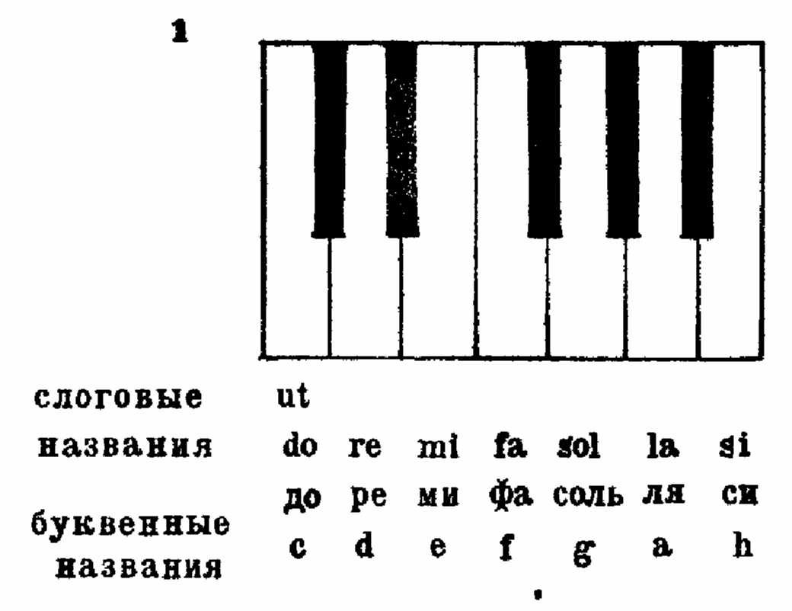
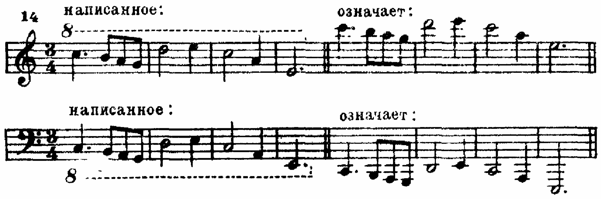
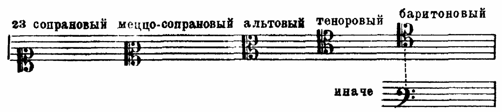
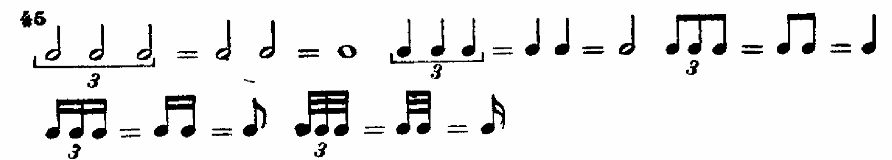
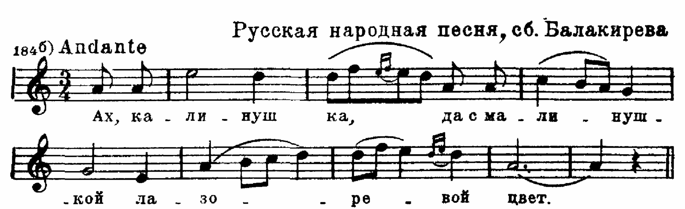
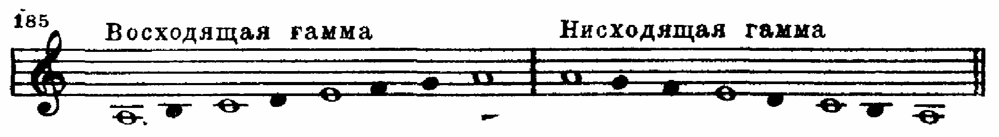
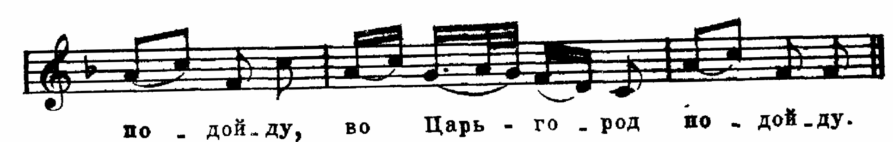
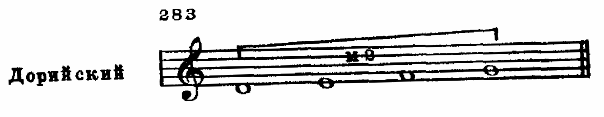
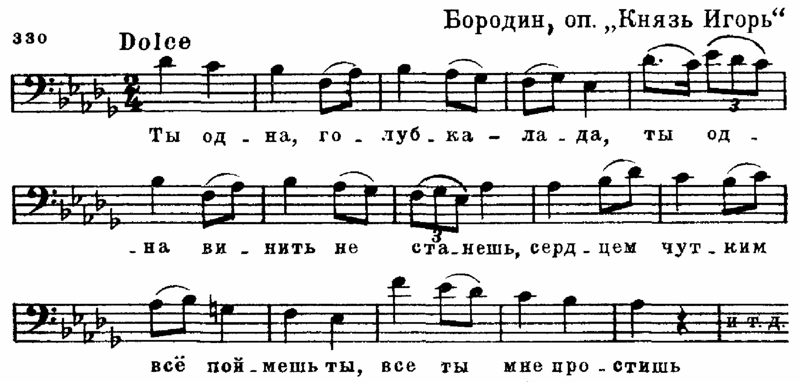
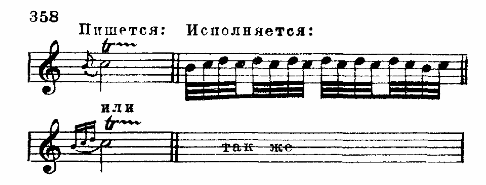

И. В. СПОСОБИН
ЭЛЕМЕНТАРНАЯ ТЕОРИЯ МУЗЫКИ
Допущено Отделом учебных заведений
министерства культуры СССР
в качестве учебника
для музыкальных училищ
ГОСУДАРСТВЕННОЕ МУЗЫКАЛЬНОЕ ИЗДАТЕЛЬСТВО
Москва 1963
Введение
Для того чтобы правильно читать и писать, нужно знать слова, их смысл и грамматику, т. е. законы языка. Для того чтобы уметь правильно сочинять музыку, играть ее или петь, нужно знать теорию музыки. Поэтому обучение теории музыки в первую очередь имеет целью подготовку к сочинению или исполнению музыкальных произведений.
Вследствие того, что музыка состоит из очень многих и разнообразных элементов, теория музыки подразделяется на несколько частей (дисциплин), элементарную теорию, гармонию, полифонию, инструментовку, учение о музыкальных формах.
Элементарная теория представляет собою род первоначальной музыкальной грамматики, которая должна сообщить учащимся систематические сведения о ряде важнейших элементов музыки. Как и вся советская теория музыки, элементарная теория основана на законах, сложившихся в народной и классической реалистической музыке.
В данный курс элементарной теории входит большинство сведений по музыкальной орфографии. Эти сведения изложены, по мере надобности, в разных частях курса, применительно к отдельным элементам музыки.
Глава 1
ЗВУК. ЕГО ВЫСОТА
§1. Звук
3вук как физическое явление представляет собою колебательные движения какого-нибудь тела — источника звука (струны, воздушного столба в духовом инструменте, пластинки, мембраны и т. д.), создающего звуковые волны (периодические сгущения и разрежения в воздухе)
Действие звуковых волн на органы слуха, передающееся через слуховой нерв в головной мозг, порождает ощущение звука. Ощущение, по определению В. И. Ленина., “есть превращение энергии внешнего раздражения в факт сознания.” Таким образом, источник звука, звуковые волны и работа слухового аппарата существуют объективно.
Общая цепь явлений такова: колебания источника звука — звуковые волны — воздействие звуковых волн на органы слуха — передача принятого слуховым нервом раздражения в головной мозг.
В природе существует бесконечное множество звуков, воспринимаемых слухом человека, но не все звуки могут служить материалом для музыки. Музыкальные звуки‚ в отличие от шумовых, Обладают особыми свойствами; они отобраны и организованы в определенную систему, выработанную в процессе многовекового развития музыкальной культуры и служащую для выражения музыкальных мыслей, музыкальных образов.
§2. Свойства и качества звука.
Свойствами звука называют объективно присущие ему физические особенности, а именно — частоту колебаний, их продолжительность, амплитуду и состав колебаний (в смысле сочетания простейших колебаний в данном сложном).
Отражение физических свойств звука в наших ощущениях есть качества звука. К качествам относятся — высота, длительность, громкость и тембр.
Рассмотрим качества звука по отдельности, в связи с порождающими их физическими свойствами.
Высота звука зависит от частоты звуковых колебаний.
Чем чаще колебания — тем выше звук; чем реже колебания — тем звук ниже. Высота может быть выражена с разной степенью ясности. Поэтому звуки разделяются на две группы:
1) звуки, имеющие ясно выраженную высоту, и 2) звуки, не имеющие ясно выраженной высоты.
Человеческий слух способен воспринимать различие в высоте (приблизительно) от 16 до 20000 колебаний в секунду. Однако в музыке используются, главным образом, звуки,имеющие ясно выраженную высоту в пределах (приблизительно) от 16 до 4000 колебаний в секунду. Такое ограничение связано с практикой человеческой речи и пения, причем в речи и пении используются звуки в еще более узких пределах.
Теория музыки занимается почти исключительно звуками, имеющими ясно выраженную высоту. В данном учебнике из пятнадцати глав высоте звука посвящены тринадцать - I, II, IV-XIV и отчасти XV.
Звуки, не имеющие ясно выраженной высоты, производимые различными шумящими и звенящими инструментами применяются в музыке ограниченно. Такие звуки изучаются в разделе ударных инструментов курса инструментоведения и оркестровки.
Длительность звука зависит от продолжительности колебательного движения. В данном курсе длительности звука посвящены части III, XIV и XV глав.
Громкость звука зависит от силы колебательного движения, выражающейся в амплитуде (размахе) колебаний. Громкость звука часто не вполне правильно называют его силой. Громкости в данном учебнике посвящена часть главы XIV.
Тембр, или окраска звука, зависит от состава звука: (некоторые подробности см. в следующем ниже пояснении, напечатанном мелким шрифтом). Благодаря разнице в тембрах мы отличаем голос одного человека от голоса другого, звук одного инструмента от звука другого и т. п.
Каждый звук представляет собой не один простой тон, а сочетание многих тонов, которые возникают потому, что источник звука колеблется не только целиком, но одновременно также и по частям (половинам. третям, четвертям, пятым и т. д), колеблющимся каждая в отдельности
Источник звука, колеблющийся целиком, производит основную частоту, наиболее слышимый звук, кажущийся единственным. Вторые части (половины) производят звук с частотой вдвое большей, чем основная; третьи части — втрое, четвертые части — вчетверо большей, чем основная, и т. д. В результате таких сложных одновременных колебаний и возникает звук сложного состава. Все данные составные части сложного звука называются частичными тонами или обертонами (см схему).
Номер каждого обертона, взятый как знаменатель дроби с числителем 1 означает, какой частью источника звука он издается. Иллюстрацией данного явления служит следующий опыт:
При открытой крышке рояля (пианино для этого опыта не пригодно) палец ставится на одну из границ между равными (1/2, 1/3 и т. д.) частями струны {найти такую границу можно передвижением пальца). Звук, извлекаемый при этом нажатием клавиша, соответствующего данной струне, и будет обертоном.
Тембр (окраска) зависит от трех обстоятельств. 1) какие на принципиально возможных для каждого звука обертонов есть на самом деле; 2) какие из них звучат громче других: 3) в каком порядке они (обертоны) появляются.
Гимн Советского Союза, легко узнается, будучи исполнена без изменений в высоте и длительности звуков, голосом или на каком-нибудь инструменте, громко или тихо. Хотя при таких условиях характер ее будет изменяться, но все же мелодия останется той же самой.
§3. Музыкальная система. Звукоряд.
Совокупность употребительных в музыке звуков определенной высоты образует музыкальную систему. Эта система является результатом длительно развивающейся музыкальной практики человеческого общества. В основу данного курса положена система, принятая в европейской, а также в русской классической музыке.
Звукорядом называются звуки музыкальной системы, расположенные в восходящем или нисходящем порядке.
Музыкальная система сложилась прежде всего в результате певческой практики. Поэтому большая часть системы является звуками, высота которых доступна человеческому голосу. Развитие музыки для инструментов повлекло пополнение системы еще некоторым числом звуков в указанных выше пределах от 16 до 4000 колебаний в секунду. Тем не менее звуковая область наиболее выразительной игры на инструментах приблизительно совпадает с той звуковой областью, в которой поют человеческие голоса (примерно от 60 до 1000 колебаний в секунду).
Музыкальная система и ее звукоряд наиболее наглядно обозреваются на
фортепьяно (пианино, рояль). На современном фортепьяно есть 88 звуков различной высоты сверх этого числа звуки в музыке почти неупотребительным.
§4. Ступень. Основные ступени звукоряда, их названия.
Ступенью называется звук музыкальной системы. Основными называются семь ступеней музыкальной системы (звукоряда), которым даны самостоятельные названия. Основным ступеням соответствуют звуки, извлекаемые на белых клавишах фортепьяно:

На фортепьянной клавиатуре имеется 52 таких белых клавиши, и они соответствуют 52 основным ступеням звукоряда.
Применяются же к ним лишь семь названий, которые периодически повторяются и относятся к соответственным ступеням — высоким (справа на клавиатуре), низким (слева на клавиатуре) и средним. Каждая восьмая (подряд по счету) ступень сходна с той, которая взята в качестве первой. Поэтому она носит одинаковое с первой ступенью название. Об этом будет сказано подробнее в §7.
Названия основных ступеней сложились в средние века, в то время, когда они действительно были не только основными, но и почти единственными.
Есть две системы названий звуков — слоговая и буквенная. Слоговая система основана на начальных слотах частей (строф) одного средневекового гимна. В слоговую систему название Si было добавлено позже, а первоначальное Ut было заменено впоследствии названием До, более удобным для пения.
В нашей стране наиболее распространена слоговая система. Существующая, наряду со слоговой, буквенная система названий звуков основана на буквах латинского алфавита.
Неправильное, с точки зрения алфавитного порядка, расположение букв в названиях звуков объясняется тем, что в средние века основным в звукоряде считался звук‚ ля (а) и за ним следовал звук си, обозначавшийся по порядку буквой b. Впоследствии основное значение вместо си (b) приобрела ступень си. Для нее понадобилось ввести букву h, следующую по алфавиту за уже использованными буквами (от а до g).
В нашей стране буквенная система применяется большей частью, вследствие ее краткости, для обозначения тональностей (см. §69), а для обозначения звуков — почти исключительно в музыкально-научной литературе. В некоторых других странах (Германия, Англия, Голландия) буквенная система является основной.
§5. Обозначение звука. Нотный стан. Начальная черта. Акколада.
Для обозначения звука принят овал, внутри пустой или заполненный:

Овал, обозначающий звук, называется нотой. К овалу (см. главу III) для обозначения длительности звука добавляются еще некоторые знаки.
Нотным станом (нотоносцем) называется система из пяти параллельных горизонтальных линий. на которых размещаются ноты. Счет линий ведется снизу вверх:

В начале нотного стана (слева) большей частью ставится вертикальная черта, называющаяся начальной.
Если произведение излагается одновременно на нескольких нотных станах. то начальная черта у них Общая. Кроме нее, еще ставится объединяющая нотные станы скобка, называемая акколадой. Акколада бывает фигурная (для фортепьяно, арфы и органа) и прямая (для всех ансамблей, хора и оркестра):
Часть нот размещается на линиях:

При этом, для того чтобы определить местонахождение ноты, говорят, что нота находится на первой линии, на второй линии и т. п.
Ноты размещаются также и в промежутках между линиями (т. е. над и под ними):
При этом, для того чтобы определить место ноты, говорят, что нота находится над той или иной линией (над первой, над второй и т. п.). Нота, находящаяся ниже первой линии, так и определяется: ниже первой линии.
§6. Добавочные линии.
Добавочными называются короткие линии для одной ноты, помещаемые выше или ниже нотного стана:

Счет добавочных линий сверху ведется в восходящем направлении (на первой добавочной линии сверху, над первой добавочной линией сверху, на второй добавочной линии сверху, над второй добавочной линией сверху и т. д ).
Счет добавочных линий снизу ведется в нисходящем порядке (на первой добавочной линии снизу, под первой добавочной линией снизу, на второй добавочной линии снизу,под второй добавочной линией снизу и т. д.):
Количество добавочных линий теоретически неограниченно, но обычно их бывает не больше пяти как снизу, так и сверху.
§7. Октавная система.
Для обозрения звукоряда музыкальной системы снова будет удобно обратиться к фортепьянной клавиатуре, т. к. ее 88 белых и черных клавишей соответствуют 88-ми звукам звукоряда и, как говорилось выше, охватывают его почти полностью.
В начале §4 было указано, что семь основных ступеней с их самостоятельными названиями периодически повторяются на разных участках звукоряда. Основанием для этого является сходство ступеней. Суть данного сходства заключается в том, что если данную ступень принять за первую, то (при счете подряд) восьмая ступень представляется как бы повторением первой на другой высоте (пример 8а). Вследствие этого восьмая ступень получает такое же название, как первая. Расстояние от данной ступени вверх или вниз до восьмой одноименной называется октавой. Октавное сходство, очевидное для отдельных звуков, не менее очевидно для целой мелодии, состоящей из ряда звуков. Например, следующая мелодия, спетая или сыгранная в первоначальном виде (пример 8б), а затем в варианте (пример 8в), представляется почти не изменившейся. Если оба варианта будут исполнены вместе, то они настолько сольются, что покажутся одним голосом (пример 8г):
На основе октавного сходства и отражающей его повторности названий звукоряд делится на участки, называемые октавами.
Рисунок, составленный сочетанием клавишей на фортепьянной клавиатуре (пример 9), имеет семь разных положений. Это значит, что звукоряд фортепьяно делится в основном на семь октав. Для ясности в этом смысле октавой называется часть звукоряда от до до ближайшего си вверх. До и он не составляют октавы, но если бы каждый звук до относился к двум октавам одновременно (вверх и вниз), то было бы неясно, к которой из них он принадлежит. Поэтому каждый звук до определяет только ту октаву, внизу которой он лежит.
Каждая октава имеет свое название.
Октава, лежащая посреди звукоряда, называется первой. Обозначения ее ступеней пишутся с малой буквы с цифрой 1 справа сверху: до1, ре1, ми1 и т. д.; c1, d1, e1 и т. д.
Октавы, лежащие выше первой, нумеруются по порядку. Обозначения их ступеней пишутся с малой буквы и справа сверху имеют номер октавы:
вторая (обозначения ступеней до2, ре2, ми2 и т. д.; c2, d2, e2 и т. д.);
третья (обозначения ступеней до3, ре3, ми3 и т. д.; c3, d3, e3 и т. д.);
четвертая (обозначения ступеней до4, ре4, ми4 и т. д.; с4, d4, e4 и т. д.);
пятая (есть только до5, иначе c5).
Вниз от первой октавы располагаются:
малая октава (обозначения ступеней с малой буквы без цифры: до, ре, ми и т. д.; c, d, е и т. д.);
6ольшая октава (обозначения ступеней с большой буквы без цифры: До, Ре, Ми и т. д.; C, D, E и т. д.);
контроктава (обозначения ступеней с большой буквы с цифрой 1 справа внизу: До1 Ре1, Ми1 и т. д.; С1, D1, E1 и т.д.)
субконтроктава—неполная на фортепьяно (обозначения ступеней с большой буквы с цифрой 2 справа внизу: Ля2‚ Си2; А2‚ H2).
§8. Диапазон. Регистр
Музыкальным диапазоном называется общий объем звукоряда, выражающийся в расстоянии от самого нижнего до самого верхнего его звука.
Диапазоном человеческого голоса или инструмента называется общий объем доступной ему части всего музыкального диапазона (диапазон фортепьяно А2—c5)
Регистром называется отличающаяся характерной звуковой окраской часть (отрезок) всего музыкального диапазона отдельного голоса или инструмента
В целом музыкальном диапазоне средним следует считать регистр, охватывающий малую, первую и вторую октавы; высокий (верхний) регистр охватывает третью, четвертую и пятую октавы; низкий — субконтроктаву‚ контроктаву и большую октаву.
Регистры разных голосов и инструментов часто не совпадают; например, звуки высокого регистра баса в то же время входят в низкий регистр альта, те звуки, которые в диапазоне валторны относятся к верхнему регистру, входят в средний регистр диапазона кларнета.
§9. Ключ. Скрипичный и басовый ключи.
Ключ — это знак, который ставится на одной из линий нотного стана и дает ноте на этой линии название определенной ступени звукоряда. Основных ключей два: скрипичный и басовый.
Скрипичный ключ обозначает соль первой октавы и ставится на второй линии нотного стана:

Басовый ключ обозначает фа малой октавы и ставится на четвертой линии нотного стана:

От ключа отчитываются все остальные ступени, располагаемые на линиях и в промежутках между ними (см пример 9).
При первоначальном знакомстве с тем или иным ключом практично для нот, удаленных от него, вести отсчет через ступень.
Названия нот, лежащих между линиями, находятся при помощи нот, лежащих на линиях. При знакомстве с одним из двух названных ключей для перехода от него к другому можно пользоваться так называемой 11-линейной системой. В ней до первой октавы лежит на средней линии. Эта средняя линия прибавляется в качестве добавочной к нотоносцу со скрипичным или басовым ключом и сохраняет значение до1 в обоих возможных случаях.

§10. Знак переноса на октаву.
Для обозначения очень высоких и очень низких звуков требуется большое количество добавочных линий, неудобное при чтении нот. Чтобы избежать излишних добавочных линий, употребителен знак для повышения на октаву этот знак пишется над нотами, для понижения на октаву не под ними:

Действие этого знака продолжается до того места, на котором кончается горизонтальный пунктир.
Глава II
ЗВУК. ЕГО ВЫСОТА (Продолжение)
§11. Строй. Камертон. Темперированный строй.
Полутон. Целый тон.
Строем называется абсолютная высота звуков музыкальной системы (каждого звука в отдельности и в соотношении его с другими).
Строй исходит из высоты одного звука, взятого в качестве ориентира. Им обычно служит ля первой октавы, для которого раньше было принято 435, а в настоящее время официально установлено 440 колебаний в секунду.
Для изготовления музыкальных инструментов, а также для исполнения музыки на правильной звуковой высоте применяется инструмент, называемый камертоном. Это — небольшая двузубая вилка, реже маленькая дудка, из которой извлекается звук определенной стандартной высоты, чаще всего упомянутое выше ля первой октавы.
На основе звука-ориентира устанавливается высота всех остальных звуков системы. Для этого на протяжении исторического развития музыки применялись различные способы, которые давали не вполне одинаковую высоту некоторых ступеней системы. Из таких способов наиболее известны: построение по чистым квинтам (см. §41), дающее так называемый Пифагоров строй, и двенадцатизвуковая равномерная темперация (см. в этом параграфе), введенная в конце XVII века и принятая ныне большинством стран мира, в том числе и СССР.
Двенадцатизвуковым (двенадцатиступенным) темперированным строем называется строй, делящий октавы на двенадцать равных частей — полутонов. Таким образом:
в октаве двенадцать полутонов;
полутон является наименьшим расстоянием по высоте, возможным в двенадцатизвуковом темперированном строе.
На фортепьяно полутоны образуются между звуками любых двух соседних клавишей (считая черные).
Примечание. Музыкальная система, в том числе при темперированном строе, представляет собой общепринятую норму правильных желательных отношений звуков по высоте На самом же деле в музыкальной практике удается лишь посильное приближение к этой норме (при пении, настройке инструментов, игре на них). Каждый звук системы теоретически должен был бы соответствовать строго определенной частоте колебаний, но практически он соответствует одной из ряда близких друг другу частот, вместе образующих целую полосу («зону»).
Между основными ступенями звукоряда имеются два полутона: ми — фа и си — до (между ми и фа, а также между он и до на фортепьяно нет черных клавишей).
Целым тоном называется расстояние между двумя звуками, равное двум полутонам. Так как в октаве двенадцать полутонов, то целых тонов в ней шесть.
Между основными ступенями звукоряда—пять целых тонов: до — ре, ре — ми, фа — соль, соль — ля и ля — си; (на фортепьяно во всех перечисленных промежутках есть черные клавиши):
Короче: между соседними основными ступенями звукоряда ми — фа и си — до — полутоны, а остальные расстояния — целые тоны.
§12. Производные ступени звукоряда. Альтерация и альтерированные ступени. Знаки альтерации.
В результате двенадцатизвуковой темперации в каждой октаве звукоряда имеется двенадцать разных звуков. Из них, как нам известно, семь (до—ре—ми—фа—соль—ля—си) считаются основными ступенями и имеют самостоятельные названия. Хотя всякая иная возможная ступень представляет собой самостоятельный новый звук, все же в исторически сложившейся музыкальной системе она условно рассматривается как производная от рядом лежащей основной ступени.
Производными называются ступени звукоряда, получаемые посредством повышения или понижения его основных ступеней.
Каждая основная ступень звукоряда может быть как повышена, так и понижена. Таким образом, любая ступень может быть представлена в разных видах, из которых каждый является, в сущности, самостоятельным звуком.
Повышение или понижение ступени называется альтерацией.
Знаками альтерации называются знаки, ставящиеся слева от ноты и указывающие на повышение или понижение основной ступени, которой соответствует эта нота. Знаки альтерации ставятся на той же высоте нотного стана, как и основная нота (т. е. на той же линии, над той же линией, под той же линией).
Знаков альтерации пять:
диез (), обозначающий повышение на полутон;
дубль-диез (), двойной диез, обозначающий повышение на целый тон (т. е. на два полутона);
бемоль (), обозначающий понижение на полутон;
дубль-бемоль (), двойной бемоль, обозначающий понижение на целый тон (т. е. на два полутона);
бекар (), отменяющий действие диезов и бемолей как простых, так и двойных. Двойной бекар неупотребителен:
Знаки альтерации бывают ключевые и случайные.
1. Ключевыми называются знаки альтерации, выставляемые рядом с ключом, несколько правее его.
Ключевые знаки действительны для всех октав звукоряда, пока не введены новые:


Если внутри музыкального произведения нужно сменить ключевые знаки. то ненужные ключевые знаки отменяются бекарами, а после этого выставляются новые.
2. Случайными называются знаки альтерации, ставящиеся непосредственно перед нотой.
Случайный знак действителен для той октавы, в какой он поставлен, только до ближайшей тактовой черты (тонкая черточка поперек нотного стана) и чаще только для одного голоса:

Иногда для напоминания о недействительности ранее введенного случайного знака ставят другой случайный знак и после тактовой черты.
Примечание: термин случайный означает, что знак вводится по случаю того' или иного действия в записываемой музыке (а не случайно в бытовом смысле слова),
§13. Названия производных ступеней.
По слоговой системе название измененной ступени складывается из названия основной ступени и знака альтерации.
Примеры:
до-диез или до
соль-бемоль или соль
фа-дубль-диез или фа
По буквенной системе и обозначениям основных ступеней прибавляются новые окончания: вместо — is‚ вместо — isis, вместо — es, вместо — eses.

Следует обратить внимание на исключения: es вместо ees, as вместо aes и b вместо hes.
§14. Энгармонизм звуков.
Энгармонизмом или энгармоническим равенством называется равенство звуков по высоте при различном их значении и написании.
Энгармонизм основан на темперации, так как лишь при равенстве полутонов возможно совпадение по высоте производной ступени с основной или производной с другой тоже производной.
Каждая основная и производная ступень может иметь две энгармонические замены (всего три названия), кроме ступени аs—gis‚ имеющей одну замену (всего два названия):
Наиболее типично энгармоническое равенство с участием основных ступеней и ступеней с однократным повышением или понижением.
§15. Диатонические и хроматические полутоны и целые тоны.
Полутоны и целые тоны могут быть двух типов: диатонические и хроматические, в зависимости от того, из каких ступеней они состоят.
Полутон или целый тон называется диатоническим, если он состоит из соседних ступеней:
Полутон называется хроматическим, если он состоит из одной ступени, взятой в двух разных видах (основной и альтерированной или, наоборот, альтерированной и основной, альтерированной и дважды альтерированной и наоборот, и т. д).
Целый тон называется хроматическим, если он состоит из одной ступени, взятой в разных видах, или из ступеней, взятых через одну:
§16. Ключи До. Общая система ключей.
Кроме общеупотребительных скрипичного и басового ключей, существует еще ключ До, обозначающий до первой октавы, на какой бы линии он ни стоял. Писали его на разных линиях. В зависимости от того, для какого человеческого голоса предназначалась мелодия:

Применение такого количества ключей было связано со стремлением избегать добавочных линий.
В настоящее время из этих ключей применяются альтовый (для смычкового альта, иногда для английского рожка и тромбона) и теноровый (для виолончели, фагота и тромбона); остальные же ключи можно встретить в старых изданиях.
Кроме семи ключей, перечисленных в I и II главах, в старину существовали еще два: старофранцузский ключ Соль на первой линии и басо-профундовый ключ Фа на пятой линии.
Старофранцузский ключ читается как басовый, но с переносом звучания на две октавы выше, а басо-профундовый — как скрипичный, но с переносом звучания на две октавы ниже.
Все ключи объединяются в общую систему:
Основа этой системы заключается в следующем: до первой октавы всегда помещается на линии; в таблице средние пять ключей До находятся на пяти линиях нотного стана; слева от этих пяти ключей лежат такие ключи, в которых до первой октавы приходится на первую и вторую добавочные линии снизу; справа от ключей До лежат такие ключи, в которых до первой октавы приходится на первую и вторую добавочные линии сверху; на добавочных линиях ключ не ставится и вместо ключа До слева стоит ключ Соль, а справа ключ Фа.
Глава III
РИТМ. МЕТР. ТЕМП
§17. Ритм. Обозначение длительностей. Основное деление.
Ритмом называется организованная последовательность звуков одинаковой или различной длительности.
Для обозначения длительности звуков существует ряд основных нотных знаков:
1) Овал, который, как сказано в §5, применяется пустой или заполненный:
2) Штиль (вертикальная палочка), который добавляется к овалу. Заполненный овал всегда имеет штиль. Штиль пишется вверх справа или вниз слева (когда и как нужно его писать, будет указано ниже—в §18):

3) Хвосты от одного до четырех (реже до пяти, даже до шести), добавляющиеся к палочке справа:

В группе нот хвосты большей частью сливаются в общие прямые (параллельные, если их две или больше) линии, называемые ребрами длительности:

Основные соотношения звуковых длительностей таковы, что каждая более крупная длительность относится к ближайшей (по порядку) более мелкой, как 2:1. Это отражается в основных знаках нотного письма следующим образом: условно принятая за единицу целая нота делится на две половинные, половинная — на две четверти, четверть — на две восьмые и т. д. (см пример 29 на стр. 25!!!).
Изредка встречаются сто двадцать восьмые и двести пятьдесят шестые. Употребляется также крупная длительность, равная двум целым, называемая брэвис:

§18. Правописание штилей.
Направление штиля (вверх или вниз) зависит от положения ноты на нотоносце. Если нота лежит ниже средней (3-й) линии, штиль пишется вверх. Если нота лежит выше средней линии, то штиль пишется вниз. Нота на самой средней линии может быть написана со штилем вверх или вниз (чаще вниз):

В группе нот направление штилей зависит от того, каких нот больше, требующих штиля вверх или штиля вниз:
Если на нотоносце излагаются два голоса, то ноты верхнего голоса пишутся штилями вверх, а ноты нижнего голоса— штилями вина (пример ЗЗа).
В том случае, когда оба голоса имеют одинаковый ритм, штиль может быть для двух нот общим. Он пишется вверх или вниз на основании общего правила правописания штилей (пример 33б):

Если на нотоносце излагаются три или больше голосов, то при одинаковом их ритме штиль может быть общим (пример 34а). То же самое может быть написано со штилями в разные стороны (пример З4б‚в).
Обязательно направление штилей в разные стороны при различном ритме голосов (пример 34 г.д,е):
§19. Паузы. Стаккато.
Паузой называется перерыв в звучании (время молчания). Паузы измеряются так же, как и длительности.
Паузы, общие для всех голосов, записанных на нотном стане, ставятся на его третьей линии или около нее. Половинная пауза пишется над третьей линией, целая — под четвертой:

Если паузирует часть голосов, то паузы пишут ближе к крайним линиям нотного стана, а если на нем нет свободного места, то и за его пределами. В последнем случае для целых и половинных пауз требуется добавочная линия.
Отрывистое исполнение звуков называется стаккато (staccato). Оно могло бы быть обозначено паузами, но вместо этого пишут точки над или под нотой или ее палочкой (см. примеры 73, 15.6в и др.). Для обозначения высшей степени стаккато (стаккатиссимо) вместо точек над нотой иногда ставят короткую вертикальную черточку, суживающуюся книзу.
§20. Знаки для увеличения нотных длительностей. Легато.
Для того чтобы обозначить продление звука, применяются следующие знаки:
1. Лига, т. е. дуга, соединяющая соседние одинаковые ноты. Из соединенных лигой нот образуется одна более крупная длительность, равная их сумме:

Если на нотоносце записан один голос, то лига выгибается в сторону, обратную направлению штилей:
Если на нотоносце записано два голоса, то верхняя лига выгибается вверх, а нижняя вниз:

Если же голосов больше чем два, лиги распределяются в обе стороны:
Паузы лигами не соединяются.
Лига применяется и для других целей. Если она охватывает группу нот (две разные ноты или большее количество нот) и написана над или под нею, то лига обозначает связное исполнение, называемое legato (легато), при котором каждый звук выдерживается так, чтобы между ним и следующим звуком не образовалась пауза, даже самая краткая.
2. Точки, ставящиеся справа от ноты. Одна точка удлиняет ноту на половину ее основной длительности:
(в числителе везде 3; в знаменателе везде длительность, прибавляемая точкой).
Реже применяются ноты с двумя точками. Вторая точка удлиняет ноту на половину длительности первой точки:

(в числителе везде 7; в знаменателе длительность, прибавленная второй точкой).
Редко встречается применение третьей точки, которая удлиняет ноту на половину длительности второй точки:
(в числителе 15; в знаменателе длительность, прибавленная третьей точкой).
Точки ставятся также при паузах и имеют такое же значение:

Для ноты, которая находится в промежутках между линиями нотного стана, точки пишутся прямо против нее, а для ноты, находящейся на линии‚— выше этой линии или, реже, ниже ее:

3.
Фермата. Ферматой называется знак
или  , который ставится над
или под нотой и обозначает произвольное
увеличение длины звука или паузы,
зависящее от характера произведения,
намерений и вкуса исполнителя. Дугой
вверх фермата пишется над нотной
строчкой, дугой вниз — под нею. Фермата
иногда ставится над или под тактовой
чертой, обозначая паузу неопределенной
длительности между концом одного такта
и началом следующего.
, который ставится над
или под нотой и обозначает произвольное
увеличение длины звука или паузы,
зависящее от характера произведения,
намерений и вкуса исполнителя. Дугой
вверх фермата пишется над нотной
строчкой, дугой вниз — под нею. Фермата
иногда ставится над или под тактовой
чертой, обозначая паузу неопределенной
длительности между концом одного такта
и началом следующего.
§21. Относительность длительностей.
Знаки нотных длительностей и пауз определяют лишь отношение друг к другу их продолжительности при избранной скорости. Например, если = 1/2 сек., то = 1/4 сек.‚ = 1 сек. и т. д.; если = 1 сек., то уже =1/2 сек, = 2 сек. и т. д.
§22. Особые виды ритмического деления.
Особыми видами ритмического делении называется дробление длительностей на произвольное количество равных частей, не совпадающее с основным их делением. Если длительность делится на три части, вместо деления на две, образуется триоль:

Примечание: как сказано в примечании в §11, на практике высота звуков воспроизводится с той или иной степенью приближения к теоретическим нормам музыкального строя. Подобно этому длительности звуков также часто получаются с некоторым незначительным отклонением от теоретической нормы. И то и другое объясняется известным несовершенством нашего восприятия по сравнению с точными приборами и тонкими оттенками музыкального звучания.
Если длительность делится на пять частей, вместо деления на четыре или на три, образуется квинтоль:
Деление на шесть частей, вместо четырех, дает секстоль

Не следует смешивать двойную триоль (из ее шести звуков несут ударение первый и четвертый) с секстолью (из ее шести звуков несут ударение первый, третий и пятый).
Деление на семь частей, вместо четырех, дает септоль:
Деление на девять частей, вместо восьми, дает новемоль:

Деление на десять частей, вместо восьми, дает децимоль:

Деление длительности с точкой на два, вместо трех, дает дуоль:

Деление длительности с точкой на четыре, вместо трех, дает квартоль:
Встречаются и другие случаи произвольного деления, заменяющие более простое дробление. Например, образуются группы из 11, 12, 13, 14 и т. д. звуков:

Во всех случаях произвольного деления правописание полученной группы основано на длительностях простейшего деления, ею заменяемого.
Во все группы особого деления могут входить паузы:
§23. Акцент.
Акцентом называется выделение звука посредством большей громкости (или большей длительности) по сравнению с окружающими звуками.
Акценты бывают реальные, т. е. существующие физически, и воображаемые (например, на паузах, при игре на органе).
Акцент обозначают знаками > и v , а также тактовой чертой (см. §25).
§24 Метр.
Метром называется периодически повторяющаяся последовательность акцентируемых и неакцентируемых равнодлительных отрезков времени.
Метр применяется для организации музыкальных звуков посредством их различной тяжести (акцентированности). Акценты, применяемые для образования метра, называются метрическими акцентами. Метрические акценты чаще всего бывают реальными, т. е. существующими физически; но они могут быть и воображаемыми. Акцентируемые и неакцентируемые равнодлительные отрезки времени, образующие метр, называются метрическими долями.
Акцентируемая доля называется тяжелой или сильной, неакцентируемая — легкой или слабой.
Метрические акценты большей частью правильно периодичны, т. е. повторяются через одинаковое количество долей, например, через одну, через две
и т. п.:

§25. Размер. Такт.
Размером называется нотное изображение метра посредством обозначения его доли определенной длительностью (четвертью, половинной и т. п.)‚ а всей метрической группы долей — дробью.
Числитель этой дроби указывает на количество долей размера (метра), а знаменатель на длительность, которая принята за основную долю. Знак дроби (горизонтальная черта) не ставится, так как им служит третья линия нотного стана. Обозначение размера помещается после ключа и ключевых знаков (диезов или бемолей):
Иногда размер обозначается только целым числом, указывающим количество долей:
Обозначение размера дробью более точно. Целым числом правильнее обозначать метр, поскольку целое число дает представление лишь о количестве долей, но не об их конкретном нотном выражении.
Тактом называется отрезок музыкального произведения, который начинается с тяжелой доли и кончается перед следующей тяжелой долей. Примечание: речь идет о разделении на отрезки по признаку сочетания тяжелых и легких долей, но не по музыкальному смыслу.
Такт, следовательно, представляет объединение метра (т. е. определенного сочетания тяжелых и легких-долей) и ритма (т. е. доследования длительностей), которые порознь возможны лишь как отвлеченные понятия, а в музыке всегда существуют одновременно.
Тактовой чертой называется вертикальная черта поперек нотоносца, отделяющая такты друг от друга. Тактовая черта ставится непосредственно перед тяжелой долей такта и служит лишь для ее обозначения. Приписывать тактовой черте какие-нибудь другие свойства (например, отделение частей произведения по их смыслу), как правило, не следует.
Двойная черта поперек нотоносца ставится в конце произведения или резко отделенной его части (в печатных нотах правая черта—толще левой).
Двойная черта с одинаковой толщиной черточек ставится перед новыми ключевыми знаками, вводимыми внутри произведения, или перед новым обозначением размера (последнее необязательно).
§26. Простые метры и размеры.
Простыми называются метры и размеры, имеющие две и три доли при одном акценте. Примечание: на все наиболее употребительные метры и размеры специальные примеры из художественной литературы не приведены. В тексте учебника можно без труда найти достаточное количество таких примеров.
Двухдольный метр применяется в виде следующих размеров:

Размер 2/2, называемый alla breve, часто обозначается
Трехдольный метр применяется в виде следующих размеров:
§27. Группировка длительностей в простых тактах.
Группировкой называют разделение в такте нотных знаков на группы соответственно строению размера. Группировка выполняется посредством объединения длительностей в группы (связанные общими ребрами), а также посредством связывания длительностей лигой. Примечание: имеется в виду лига как знак увеличения длительности, объединяющая ноты, одинаковые по высоте. Применяется группировка для того, чтобы облегчить чтение различных ритмических фигур.
Правила группировки, соответствующие строению размера, таковы:
1. Основные доли такта должны быть ясно отделены друг от друга перерывом в ребрах длительности. Поэтому в простом такте имеется столько групп, сколько в нем основных долей. Чем мельче ритмическое дробление, тем важнее выполнение этого правила.
Если доля обозначена длительностью меньше четверти ( или )‚ то при отсутствии сложных ритмических дроблений часто применяются ребра, объединяющие все доли такта. При таком одном общем ребре другие ребра (второе, третье и т. д.) для ясности могут быть отдельными у каждой основной доли:


2. В случае мелкого ритмического дробления каждая главная (долевая) группа может быть подразделена на 2 или 4 равные друг другу побочные группы. Большее число побочных групп малоупотребительно.
Рисунок группировки наиболее отчетлив, когда побочные группы связаны в главную группу одним общим ребром:

3. Широко употребительны длительности, охватывающие целое число основных долей такта (ровно две доли, ровно три доли):
4. Паузы группируются по тем же правилам, что и ноты, разумеется, без применения лиг.
5. Ради упрощения письма строгую группировку, отделяющую друг от друга основные доли такта, можно нарушать нотами с точкой (много реже с двумя точками, еще реже — с тремя):

Если в долевой группе больше чем одна нота. то точка у последней ноты этой группы, заимствующая часть из следующей доли, не рекомендуется вследствие недостаточной наглядности:
§28. Сложные метры и размеры. Тяжелые (сильные) и относительно тяжелые доли.
Сложными называются метры и размеры, образующиеся от слияния в последовательности одинаковых простых метров (размеров) и потому имеющие
больше чем один акцент. Количество акцентов равно количеству простых метров, слитых в один сложный.
Акцент первого из слитых простых метров сильнее, чем акценты последующих простых метров, вошедших в данный сложный. Поэтому первая доля сложного метра называется тяжелой (сильной), а первые доли последующих простых метров, вошедших в его состав,— относительно тяжелыми (относительно сильными).
Наличие одного главного акцента, т. е. тяжелой доли на два или больше простых метров, и есть причина их слияния в сложный метр. Сложные метры и размеры бывают двухдольными и трехдольными.
Сложными двухдольными называются метры и размеры, которые образуются от слияния только двухдольных простых метров. Из них широкоупотребителен лишь четырехдольный метр:
Размер 4/4 часто обозначается знаком C, а 4/2—знаком CC.
Сложными трехдольными называются метры и размеры, которые образуются от слияния только трехдольных простых метров и размеров. Употребительны почти исключительно:
шестидольный метр (3+3) в виде следующих размеров:
девятидольный метр (З+З+3) в виде следующих размеров:

двенадцатидольный метр (З+З+З+3) в виде следующих размеров:
§29. Группировка в сложных размерах.
Правила группировки в сложных размерах следующие:
1. Простые размеры, слитые в данный сложный, должны быть ясно отделены друг от друга. Поэтому в сложном размере имеется столько групп, сколько в нем простых размеров. В каждом же их этих простых размеров группировка делается по правилам изложенным в §27:

2. Широкоупотребительны длительности, охватывающие целое число простых тактов (ровно два, ровно три, ровно четыре):
§30. Сложные смешанные метры и размеры. Группировка длительностей в них.
Сложными смешанными называются метры и размеры, которые образуются от слияния простых (и двухдольных и трехдольных) метров и размеров в различных возможных сочетаниях.
Пятидольные метры (2+3 или 3+2) применяются в виде следующих размеров:

Много реже бывают семидольные метры (2+2+3. или 3+2+2‚или 2+3+2) в виде следующих размеров:
Оба эти метра, особенно пятидольный, встречаются в русской народной песне и нередко в музыке русских классиков. Приводим пример на пятидольный метр:

Как видно из некоторых приведенных примеров, строение смешанного размера можно обозначить делением сложного размера на простые посредством пунктирных тактовых черт. Кроме того, употребительно и пояснительное обозначение в скобках, ставящееся на нотоносце после основного обозначения размера, например: 5/4 (3/4+2/4), или над нотоносцем в виде слигованных нот, выражающих простые размеры вошедшие в данный сложный:

Кроме пяти- и семидольного, изредка встречаются другие сложные смешанные метры, состоящие из разных сочетаний двух- и трехдольности, как-то:
восьмидольные метры (3+3+2 или 3+2+3, или 2+3+3):

девятидольные метры (вместо обычного 3+3+3, объединения 2+2+2+3 или 2+2+3+2‚ или 2+3+2+2, или 3+2+2+2):

одиннадцатидольные метры (2+2+2+2+3 или 2+2+2+З+2 и т. д.):

В сложных смешанных размерах длительности группируются таким образом, чтобы были отделены друг от друга все простые размеры, вошедшие в их состав. Внутри же этих простых размеров группировка делается на общих основаниях, изложенных в §27.
§31. Переменные метры и размеры. Понятие о полиметрии.
Переменными называются метры, в которых изменяется количество долей на протяжении всего произведения или его части. Такие метры могут быть правильно (периодически) переменными, т. е. с изменением числа долей через одинаковые промежутки времени:

В подобных случаях размер можно обозначить один раз двумя (или тремя) дробями, поставленными рядом:
Не менее часто встречаются неправильно (непериодически) переменные метры, с изменением числа долей через различные промежутки времени:

Переменные метры очень характерны для медленных (протяжных) русских народных песен и отчасти для произведений русских композиторов (чаще тех, которые непосредственно близки к народной музыке).
Полиметрией называется одновременное сочетание разных метров.
Главные акценты (тяжелые доли) могут совпадать, но бывают случаи, когда они полностью или частично не совпадают:

Полиметрия применяется редко. В последнем примере ее смысл — изображение трех оркестров, играющих на празднике одновременно три разных танца.
§32. Группировка в вокальной музыке.
Некоторые важнейшие исключения из общих правил группировки. В нотном письме для человеческих голосов приняты следующие правила группировки:
1. Если один слог текста приходится на один звук, то соответствующая ему нота не группируется с соседними нотами:

2. Если один слог текста приходится на несколько (два или больше) звуков, то соответствующие им ноты подчиняются общим правилам группировки, изложенным в предыдущих параграфах Все ноты, приходящиеся на один слог, охватываются одной общей лигой:
Группировка в вокализах, поющихся на один гласный звук, полностью подчиняется общим правилам.
Общие правила группировки иногда нарушаются для того, чтобы указать желательную фразировку. В этих целях нормальная группа разрывается на части, а длительности, относящиеся к разным группам, связываются общим ребром (в том числе через тактовую черту):

§33. Затакт.
Затактом называется звук или группа звуков, представляющая собой неполный такт (без тяжелой доли), с которого начинается произведение или любая (хотя бы и самая мелкая) его часть:

В последнем такте произведения или его раздела нередко недостает такой части длительностей, какая была в затакте:

§34. Синкопа.
Синкопой называется звук, начинающийся на легкой доле и выдерживаемый на следующей за ней более тяжелой. Начало синкопы чаще всего акцентируется, благодаря чему синкопический акцент вступает в противоречие с метрическим акцентом. Важнейшие виды синкоп представляют собой длительность с соотношением частей 1:1:

или с соотношением частей 2 : 1, реже 1 :2:
Встречаются синкопы и с другим соотношением частей 3:1, 4:1, 6:1,1:3‚ 1:4‚ 1:6 и т. п.

Синкопа, делящаяся ровно пополам (1 : 1), всегда пишется двумя слигованными нотами, если ее части находятся в разных тактах. Внутри одного такта такая синкопа часто объединяется в одну ноту.
Синкопы других разновидностей для ясности следует писать с соблюдением основных правил группировки длительности.
Эффект, родственный синкопам, получается при паузировании на тяжелой или относительно тяжелой доле

Синкопы, создающие смещение акцента с тяжелой доли на легкую, не следует смешивать с теми лигованными нотами, которые не меняют акцентировки в такте (лига от ноты любой длины к ноге, имеющей такой же или меньший акцент, или вовсе не имеющей его).
§35. Ритмической рисунок. Значение ритма и метра в музыке.
Ритмическим рисунком называется последовательность звуковых длительностей, взятая отдельно от высотных соотношений звуков.
Значение ритмического рисунка для выразительности музыки очень велико. Например, уже один ритмический рисунок сам по себе может характеризовать некоторые роды (жанры) музыки (например, марш, вальс, мазурку и т. п.). Вообще, конечно, для создания художественного образа один ритмический рисунок, как и всякое отдельное средство, недостаточен. Однако значение его остается очень большим почти всегда, и если пример 94 представляется выражением спокойствия, а пример 91 передает состояние взволнованности, то роль ритма в обоих случаях—не последняя (см.стр.51 и 53)
Само понятие «ритм», в переводе с греческого, означает «течение» Во всех искусствах, в том числе и музыке, это понятно в широком смысле слова рассматривается как общая последовательность или общее сочетание элементов (составных частей) художественного произведения. В данном смысле огромное значение имеет определенность, четкость в соотношении крупных и мелких составных частей целого, в том числе и определенность отношения звуковых длительностей (одинаковых или различных) друг к другу. Она выражается, в частности, в общепринятой системе деления длительностей на два (целая, половинная, четверть, восьмая и т. д.). Без этого признака определенности музыка была бы недостаточно организованной, недостаточно запоминаемой, а в конечном счете и недостаточно определенно воздействующей на людей.
Определенность в соотношениях звуковых длительностей имеет ценность только тогда, когда их течение организовано по смыслу. Это выражается в образовании в музыкальном произведении последовательностей (ритмических комбинаций) из нескольких звуковых длительностей, причем каждая последовательность отделяется от других (соседних последовательностей) и в то же время составляет вместе с ними
нечто целое. Подробнее об этом будет сказано в главе XV.
Наконец, понятие «ритм» в узком смысле слова рассматривается как повторность каких-нибудь элементов. Причина такого суживания понятия заключается в том, что очень часто средством для передачи единства содержания произведения служит одинаковость или сходство его частей. Пример — одинаковость колонн в колоннаде здания и очень часто одинаковость (или сходство) частей здания, расположенных влево и вправо от колоннады (симметрия). В музыке, аналогично, применяется повторность ритмических комбинаций (т. е, порядка длительностей), сохраняющая первоначальный характер.
Метр, т. е. правильная (большей частью периодическая) повторность акцентируемых и неакцентируемых моментов, тоже служит для организованности музыки. Этим музыкальный метр напоминает размеренность стиха и нередко действительно с ней связан в вокальной (для человеческих голосов) музыке.
Соотношение метра и ритма иногда сравнивают с канвой и вышивкой. Метр своей равномерностью, т. е. одинаковостью долей, напоминает сетку канвы, в которой равномерно расположены перекрещивающиеся нити и отверстия. Ритм же своим разнообразием как бы походит на вышивку, которая может быть сделана стежками то более узкими, то более широкими.
§36. Темп.
Темпом называется скорость движения, точнее — частота пульсирования метрических долей.
Темп обозначается в начале произведения или его части словами, написанными над нотной строчкой. Большое применение до сих пор имеет итальянская терминология:
К этим основным обозначениям прибавляются нередко дополнительные слова:
В течение музыкального произведения темп часто меняется. Постепенные изменения обозначаются следующим образом:
Для обозначения наибольшей постепенности в изменении темпа перед этими словами пишут poco a poco (поко а поко), т. е. мало-помалу.
Для введения более постоянного нового темпа пользуются приведенными выше основными обозначениями, а также следующими:
Для восстановления прежнего темпа применяются обозначения:

Для темпа с частыми мелкими отклонениями от основной скорости существует обозначение tempo rubato (темпо рубато), т. е. свободный темп.
Возможность произвольного темпа с произвольными же отклонениями от него обозначается выражениями ad libitum (ад либитум) и a piacere (а пьячере) — по желанию.
Кроме итальянской терминологии, авторы также пользуются для обозначения темпа словами своего родного языка (обозначения на немецком языке у Шумана, на французском у Дебюсси). Ряд советских композиторов употребляет обозначения на русском языке.
Многие из обозначений темпа, кроме скорости движения, в некоторой мере определяют и общий характер исполнения. Но и то и другое определяется неточно и зависит от содержания каждого отдельного произведения и его толкования исполнителем.
Точное обозначение темпа возможно с помощью метронома. Он представляет собой маятник, приводимый в движение заводным механизмом. На маятник надета гирька, которая может быть передвинута по нему вверх и вниз. Чем выше положение гирьки на маятнике, тем реже его равномерные колебания; чем положение гирьки ниже, тем они чаще. На стенке метронома есть шкала с делениями и цифрами. Каждая цифра указывает, сколько ударов в минуту сделает маятник, если гирьку поставить против нее. Один удар маятника может быть обозначен любой ритмической длительностью (четвертью, половинной и т. п.) Обычно в качестве основной единицы измерения выбирается длительность, служащая долей такта. После словесного обозначения темпа (а иногда даже без него) и характера исполнения ставят М. М., затем ноту, которая выражает счетную единицу, знак равенства и цифру метронома, которая дает требуемую скорость.
Пример: Allegro M.M. = 92 или Allegro = 92 (не ставят М. М.) и даже
просто = 92 (пропущено и название темпа).
§37. Значение темпа в музыке.
Значение темпа в музыке очень велико, так как характеру каждого музыкального образа соответствует более или менее определенная скорость движения. Например, состояние взволнованности обычно передается музыкой в скором темпе:
Со скорым темпом, естественно, связан оживленный танец:


В музыке триумфального характера часто встречаются скорые или умеренно-скорые темпы:

Музыка пасторального характера часто бывает в умеренном темпе:

Медленные темпы встречаются в музыке разного характера, например скорбного:
в похоронных маршах:

в спокойно-повествовательной музыке:
Сколько-нибудь значительное отступление от темпа, нормального для данного произведения, ведет к искажению характера его музыкальных образов.
Замена одного темпа другим иногда используется для художественных целей. Следующая мелодия в скором темпе (пример 98а) выражает энергию; проведение ее в умеренном темпе (пример 98б) имеет спокойный, эпический характер:
Глава IV
ИНТЕРВАЛЫ
§38. Интервал. Интервал мелодический и гармонический.
Интервалом называется сочетание двух звуков, взятых последовательно или одновременно. Нижний звук интервала называется его основанием, верхний — его вершиной:
Интервал, звуки которого взяты последовательно (один за другим), называется мелодическим. В зависимости от направления, мелодический интервал может быть восходящим или нисходящим:
Восходящий мелодический интервал читается от основания к вершине, без всяких оговорок (пример 99а — до—соль) или с указанием направления (тот же пример — до—соль вверх). Нисходящий мелодический интервал читается с обязательным указанием направления (пример 99б — соль—до вниз).
Интервал, звуки которого взяты одновременно, называется гармоническим:

Гармонический интервал, как правило, читается от основания к вершине (пример 99в — до—соль).
§39. Ступеневая величина интервала.
Ступеневой величиной интервала называется количество охватываемых им ступеней.
В октаве, как известно, заключено восемь ступеней. Соответственно этому имеется восемь основных названий интервалов, отражающих их ступеневую величину. Каждое название обозначает порядковый номер второго звука интервала так, как если бы от первого его звука брались все ступени до него подряд:
Эти названия следующие:


Выше даны примеры построения восходящих и нисходящих интервалов от звука до. Аналогичным образом строятся интервалы и от других звуков:

§40. Тоновая величина интервалов.
Тоновой величиной интервала называется количество заключенных в нем тонов или полутонов.
Тоновая величина выражается в целом, дробном или смешанном числе тонов (например — 2 т.‚ 1/2 т.‚ 3 1/2 т. и т. п.). Однако такое арифметическое выражение величины большей частью лишь подразумевается под прилагательными, которые будут указаны ниже в этом параграфе.
Определение тоновой величины интервала необходимо потому, что ступеневая величина определяет его лишь приблизительно. Уже однородные интервалы между основными ступенями звукоряда не все одинаковы по числу заключенных в них тонов. Например, секунды до—ре, ре—ми, фа—соль, соль—ля, ля—си заключают в себе 1 целый тон; секунды же ми—фа и си—до — полутон. Таким образом, ступеневая величина интервала не может определить его вполне точно.
Тоновая величина и зависящее от нее качество интервала определяются прилагательными: чистая, большая, малая, увеличенная, уменьшенная, дважды увеличенная и дважды уменьшенная. Эти прилагательные пишутся и произносятся перед числительным, обозначающим ступеневую величину (например, чистая прима, но не прима чистая).
§41. Интервалы между основными ступенями звукоряда.
Между основными ступенями звукоряда образуются следующие интервалы:
1. Чистые примы = 0 т.
Чистая прима — сочетание данной ступени с ее буквальным повторением. Между основными ступенями все примы — чистые.
2. Малые секунды = 1/2 т.‚ большие секунды = 1 т.
Секунды — сочетание данной ступени с ближайшей к ней сверху или снизу. Между основными ступенями две малые секунды: ми—фа и си—до; остальные — большие.
З. Малые терции = 1 1/2 т.‚ большие терции = 2 т.
Терция — сочетание данной ступени с лежащей от нее через одну сверху или снизу. На нотном стане ноты, обозначающие терцию, лежат обе на соседних линиях или обе в соседних промежутках — между линиями. Между основными ступенями три большие терции: до—ми, фа—ля и соль—си ; остальные — малые.
4. Чистые кварты = 2 1/2 т., увеличенная кварта = 3 т. (тритон)
Кварта — сочетание данной ступени с лежащей от нее через две. Между основными ступенями все кварты — чистые, кроме фа-си — увеличенной.
5. Чистые квинты = З 1/2 т.‚ уменьшенная квинта = 3 т. (тритон)
Квинта — сочетание, как бы складывающееся из двух терций, взятых одна за другой. На нотном стане ее рисунок характерен тем, что обе ноты находятся на линиях или в промежутках между линиями (взятых через один). Между основными ступенями все квинты — чистые, кроме си—фа — уменьшенной.
6. Малые сексты = 4 т. большие сексты = 4 1/2 т.
Секста образуется сложением кварты с терцией или терции с квартой. Другой способ построения состоит в откладывании от октавы терции в обратную сторону (см.§46). Между основными ступенями три малые сексты: ми—до, ля—фа и си—соль; остальные — большие.
7. Малые септимы = 5 т.‚ большие септимы = 5 1/2 т.
Септима — сочетание, как бы складывающееся из трех терций, взятых одна за другой. Другой способ построения состоит в откладывании от октавы секунды в обратную сторону. На нотном стане рисунок септимы характерен тем, что обе ноты находятся на линиях или в промежутках между линиями. Между основными ступенями две большие септимы: до—си и фа—ми; остальные — малые.
8. Чистые октавы = 6 т.
Между основными ступенями все октавы — чистые.
Перечисленные интервалы (т. е. чистые, большие и малые, а также ув. кварта и ум. квинта) считаются основными.
§42. Основные интервалы с производными (измененными) ступенями звукоряда.
Всякий интервал может быть построен вверх и вниз как от основной, так и от измененной ступени. Для построения можно сначала установить ступеневую величину интервала путем отсчета требуемого количества ступеней, а затем регулировать, если это нужно, тоновую величину знаком альтерации. Следует заметить, что интервалы изменяются таким образом:
увеличиваются от повышения вершины или от понижения основания;
уменьшаются от понижения вершины или от повышения основания
Пример: требуется построить малую сексту вверх от си (4 тона):

Другой способ построения интервала основан на использовании интервалов более узких, чем требуемый. Для этого способа, разумеется необходимо предварительное твердое усвоение узких интервалов.
Малая и большая секунды строятся без вспомогательных приемов
Малая терция строится как сумма двух секунд разного качества б.2+м.2 или м.2+б.2
Большая терция, как сумма двух больших секунд б.2+б.2
Чистая. кварта как сумма секунды и терции разного качества б.2+м.3; м 2+б.3. б.3+м.2; м.3+б.2
Чистая квинта как сумма двух терций разного качества: б.3+м.3; м.3+ 6.3
Малая секста как сумма чистой кварты и терции того же качества, какого должна быть секста: ч.4+м.3; м.3+ч.4
Большая секста строится как сумма чистой кварты и терции того же качества, какого требуется секста: ч.4+б.3; б.3+ч.4
Малая септима строится как сумма чистой квинты и терции того же качества, какого требуется септима: ч.5+м.3; м.3+ч.5
Большая септима как сумма чистой квинты и терции того же качества, какого требуется септима: ч5+б.3, б.3+ч.5
Построение чистых интервалов облегчается тем, что ступени, из которых они состоят, обе не изменены или обе изменены одинаково (т. е. одинаково повышены или одинаково понижены). Исключение представляют чистые кварты и квинты, состоящие из ступеней фа—си, си—фа:
§43. Увеличенные и уменьшенные интервалы.
Увеличенным называется интервал, который на хроматический полутон шире чистого или большого при одинаковой с ним ступеневой величине. Уменьшенным называется интервал, который на хроматический полутон уже чистого или малого при одинаковой с ним ступеневой величине.
Всякий интервал может быть увеличенным или уменьшенным (исключение: уменьшенная прима — невозможна).
Соотношение интервалов, различных по тоновой величине, но одинаковых по величине ступеневой, изображается следующей схемой:

Примечание. 1/2 обозначает хроматический полутон.


Существуют также интервалы дважды увеличенные (на хроматический полутон шире увеличенных) и дважды уменьшенные (на хроматический полутон уже уменьшенных). Из них наиболее употребительны: дважды ув. кварта, дважды ум. квинта, дважды ув. прима и октава, дважды ум. октава:
§44. Простые интервалы.
Простыми называются интервалы, не превышающие своей величиной чистой октавы.
§45. Составные интервалы.
Составными называются интервалы шире чистой октавы. Каждый составной интервал представляет собой простой с добавлением одной, двух, трех и т. д. чистых октав:

Таким образом из каждого простого интервала может быть получен ряд составных интервалов. Определяется составной интервал по соответствующему простому. например:
б.2 через октаву
б.2 через две октавы
б.2 через три октавы и т. д.
Составные интервалы, которые не превышают двойной октавы, имеют самостоятельные названия по количеству ступеней, охватываемых ими:
нона (девятая ст.) — секунда через октаву
децима (десятая ст.) — терция через октаву
ундецима (одиннадцатая ст.) — кварта через октаву
дуодецима (двенадцатая ст.) — квинта через октаву
терцдецима (тринадцатая ст.) —— секста через октаву
квартдецима (четырнадцатая ст.) -—— септима через октаву
квинтдецима (пятнадцатая ст.) -— двойная октава

§46. Обращение интервалов.
Обращением простого интервала называется перемещение его нижнего звука на октаву вверх или верхнего звука на октаву вниз. В результате получается другой интервал, который в сумме с первоначальным составляет октаву:


Поэтому обращение является вычитанием из октавы первоначального интервала.
При обращении интервалов действуют следующие закономерности:
1. Все интервалы разделяются на две группы взаимнообратимых интервалов:

Числовые обозначения взаимнообратимых интервалов (в приведенной таблице — по вертикали) в сумме всегда составляют 91. Поэтому для того, чтобы узнать, во что обращается данный интервал, нужно его числовое обозначение вычесть из девяти.
Примечание: число 9 не соответствует истинной сумме взаимнообратимых интервалов— октаве (8) и отличается от нее на единицу, так как при обращении простого интервала в простой же один звук входит и в обращаемый интервал и в его обращение (см. пример 111б). т. е. считается два раза вместо одного.
Примеры:
терция (З) обращается в (9 - 3 = 6) сексту
септима(7) обращается (9 - 7 = 2) секунду
и т. п.
2. Качество интервалов, за исключением интервалов чистых, при обращении переходит в противоположное:
чистые интервалы обращаются в чистые
большие в малые
малые в большие
увеличенные в уменьшенные
уменьшенные в увеличенные
дв. увеличенные в дв. уменьшенные
дв. уменьшенные в дв. увеличенные
Сказанное выше об обращении может быть распространено на все интервалы, в том числе и составные, независимо от того, сколько в них дополнительных октав.
В более широком понимании, обращением интервала называется превращение его основания в вершину, а вершины в основание посредством переноса нижнего звука вверх или верхнего звука вниз (оба действия возможны одновременно) на одну или несколько октав, смотря по необходимости:
В данном примере во всех случаях основание до стало вершиной, а вершина соль стала основанием.
Из этого же примера видно, что простой интервал может обращаться не только в простой, но и в составной; а составной— не только в простой, но и в составной же. Во всех случаях, когда приходится иметь дело с составным интервалом, его следует мысленно приводить к соответствующему простому: независимо от количества дополнительных октав основные закономерности обращения простых интервалов не изменяются.
Обращение интервалов применяется в следующих целях:
1. Из каждого аккорда посредством обращения его интервалов могут быть получены производные аккорды, имеющие несколько иную звучность (подробнее — в главе V):

2. Сочетание двух мелодий, звучащих одновременно, часто изменяется путем передвижения на октаву так, что верхняя мелодия становится нижней, а нижняя — верхней. При этом все интервалы, образующиеся между мелодиями, обращаются:
Такой прием называется двойным контрапунктом октавы (двойным, т. к. мелодий две и у каждой из них два положения, одно сверху, а другое снизу; контрапунктом—потому‚ что так называется сочетание мелодий, звучащих одновременно; октавы — по интервалу, на который переносятся мелодии).
3. Обращение может быть использовано для учебных целей, например, для построения или проверки широких интервалов посредством узких:
1) Для построения широкого интервала в ту или иную сторону (вверх или вниз) строится в эту же сторону чистая октава, а затем от нее откладывается обращение требуемого интервала в противоположном направлении:

2) Для проверки тоновой величины широкого интервала следует установить, какого интервала не хватает до октавы:

Так как сумма взаимнообращающихся интервалов — октава — равна 6 целым тонам, то тоновая величина широкого интервала может быть получена посредством вычитания тоновой величины его обращения на шести.
§47. Энгармонизм интервалов.
Энгармонически равными называются интервалы, которые, будучи взяты изолированно, звучат одинаково, но имеют разное значение и написание. Энгармонизм интервалов основан на энгармонизме входящих в них звуков.
Есть два типа энгармонического равенства интервалов:
1. С энгармонической заменой обоих звуков интервала таким образом, что в результате не изменяется его ступеневая и тоновая величина (например, малая секунда остается малой секундой и звучит на той же высоте):
2. С энгармонической заменой одного или обоих звуков интервала таким образом, что изменяется его ступеневая величина:
Из приведенной таблицы видно, что каждому из основных, т. е. простейших и употребительнейших интервалов (чистому, большому и малому) энгармонически равен какой-нибудь увеличенный, уменьшенный и т. п. интервал.
Энгармонизм применяется главным образом в модуляции (см. главу VII).
§48. Диатонические и хроматические интервалы.
Диатоническими называются интервалы тех видов, которые возможны между основными ступенями звукоряда (и, что важнее, между ступенями диатонических ладов, см. главу. IX), а именно, все чистые, большие, малые и тритон. Выше эти интервалы были названы основными, поскольку они имеют в музыке преобладающее значение и исторически предшествуют другим видам интервалов.
Хроматическими называются все увеличенные и уменьшенные (кроме тритона), дважды увеличенные и дважды уменьшенные интервалы.
Диатонические интервалы обращаются в диатонические, хроматические — в хроматические.
§49. Консонирующие и диссонирующие интервалы.
Гармонические интервалы, по впечатлению, производимому ими на слух, разделяются на две группы — консонансы и диссонансы. Консонансами называются интервалы, звучащие более мягко, звуки которых как бы сливаются друг с другом.
Есть три подгруппы консонансов:
Весьма совершенные консонансы, в которых имеет место полное слияние звуков,— чистый унисон и почти полное слияние — октава.
Совершенные консонансы, в которых имеет место значительное слияние звуков, — чистая квинта и отчасти чистая кварта.
Несовершенные консонансы, в которых имеет место незначительное слияние,— большие и малые терции и сексты.
Для весьма совершенных и совершенных консонансов характерна некоторая «пустота» звучания; несовершенные же консонансы звучат более полно.
Диссонансами называются интервалы, звучащие более резко, звуки которых не сливаются друг с другом. К ним относятся большие и малые секунды и септимы, отчасти чистая кварта, а также все увеличенные и уменьшенные интервалы.
Как было отмечено в §47, все увеличенные и уменьшенные интервалы, кроме тритона, энгармонически совпадают с теми или иными основными интервалами, в частности консонирующими. Отсюда, казалось бы, вытекает то, что увеличенный или уменьшенный интервал, энгармонически равный консонансу, диссонирует только теоретически. На самом же деле увеличенные и уменьшенные интервалы обычно применяются в таких условиях (Имеются в виду ладовые условия (см. гл. VI и §87); о диссонировании же такого интервала. взятого изолированно в условиях нашего темперированного строя. говорить нельзя.), что диссонирование их в контексте несомненно. В двух следующих отрывках отмечены гармонические интервалы, которые равны энгармонически (м.6 и ув.5). Однако c1—as1 в первом отрывке звучит консонант-
но, а c1—gis1 во втором — диссонирует:

Все сказанное о простых интервалах относится и к соответствующим им составным. Консонирующие интервалы обращаются в консонирующие (исключение — обращение квинты в кварту, которая имеет двойственную природу); диссонирующие интервалы обращаются в диссонирующие.
§50. Применение интервалов в музыке.
В начале этой главы было указано, что интервалы бывают мелодические и гармонические.
В мелодии основное значение имеют диатонические интервалы. Интервалы можно разделить на узкие — прима, секунда, терция и широкие—кварта‚ квинта и т. д.
Многие прекрасные народные мелодии состоят из узких интервалов:


Но большей частью в народных мелодиях узкие интервалы сочетаются с широкими, при некотором преобладании узких:

Сказанное относится и к громадному большинству мелодий в произведениях композиторов:
Однако музыка композиторов часто в некоторых отношениях сложнее народной музыки. Это относится, в частности, к интервальному строению мелодии, в которой применяются не только хроматические интервалы, но и в значительном количестве скачки:

Гармонические интервалы, как сказано выше, разделяются на консонирующие и диссонирующие.
В народной музыке, в том числе в русской песне, диссонансы применяются ограниченно:
В музыке композиторов-классиков основой тоже является консонирующая гармония. Вместе с тем, примерно с XVII века, в связи с развитием реалистического музыкального мышления, вошли в обиход и многие диссонирующие созвучия. Диссонирующие созвучия, не будучи самоцелью, обогащают мелодически музыку той или иной степенью напряженности и придают ей дополнительные краски. Практикой был выработан ряд приемов которые смягчают диссонирующие созвучия. Из них важнейшие: 1) участие диссонирующих интервалов в созвучиях вместе со смягчающими их консонирующими интервалами, 2) разрешение диссонанса, т. е переход в следующий за ним консонанс (об этом подробнее в §86), и пр. Применяемые на этих основах диссонансы могут быть даже почти незаметными.
В примере 125 нет совсем аккордов (см. §51), содержащих в себе диссонирующие интервалы, и лишь в мелодии на слабых долях есть звуки, образующие тот или иной диссонанс по отношению к звукам аккордов:
В примере 12б, наоборот, во всех аккордах, кроме первого, есть диссонирующие интервалы, звучащие очень мягко:

Применение диссонирующих созвучий особенно характерно для драматической музыки:

К концу XIX века всеобщий упадок буржуазной культуры отразился и в музыке. Формалистические буржуазные «школы» совершенно потеряли связь с народной музыкой, с традициями классиков-реалистов, предали забвению законы и нормы музыкального творчества, выработанные многовековым развитием культуры.
Наиболее характерной чертой буржуазной формалистической музыки является распад мелодии. Конкретно это выразилось в выдвижении ритма и гармонии (см. §51) на первый план, в злоупотреблении хроматическими интервалами, в нагромождении широких интервальных скачков. Все это настолько противоречит вокальной (речь идет о происхождении) природе мелодии, что, по существу, является отрицанием мелодической красоты в музыке. Вместе с распадом мелодии развилось стремление к резким диссонансам, которые стали господствующими в формалистической музыке:

Пример 128 является иллюстрацией отсутствия ясной мелодии и отрицания благозвучия в упадочной формалистической буржуазной музыке.
А. М. Горький в статье «О музыке толстых» дал исключительно яркую характеристику современной буржуазной формалистической музыки: «...вдруг в чуткую тишину начинает сухо стучать какой-то идиотский молоточек — раз, два, три, десять, двадцать ударов, и вслед за ними, точно кусок грязи в чистейшую прозрачную воду, падает дикий визг, свист, грохот, вой, рев, треск: врываются нечеловеческие голоса, напоминая лошадиное ржание, раздается хрюканье медной свиньи, вопли ослов, любовное кваканье огромной лягушки; весь этот оскорбительный хаос бешеных звуков подчиняется ритму едва уловимому, и, послушав эти вопли минуту, две, начинаешь невольно воображать, что это играет оркестр безумных... нечеловеческий бас ревет английские слова, оглушает какая-то дикая труба, напоминая обездоленного верблюда, грохочет барабан, верещит скверненькая дудочка, раздирая уши, крякает и гнусаво бубнит саксофон… Это радио в соседнем отеле утешает мир толстых людей, мир хищников... Это музыка для толстых». А. М. Горький. Город желтого дьявола.
Влияние буржуазной формалистической, упадочнической музыки на некоторых советских композиторов принесло большой вред развитию советской музыкальной культуры. Наша партия, опираясь на многомиллионные массы советских людей, на передовых музыкантов, в течение многих лет вела и ведет решительную борьбу против буржуазных, формалистических влияний в советской музыке. Центральный Комитет Коммунистической партии ‚в редакционных статьях газеты «Правда» неоднократно предостерегал советских композиторов от увлечения упадочнической, формалистической музыкой, враждебной и чуждой советскому народу.
В своем постановлении от 10 февраля 1948 года «Об опере «Великая дружба» В. Мурадели» ЦК партии разоблачил до конца антинародную сущность формалистической музыки и наметил правильные пути развития советской музыкальной культуры на основе теснейшей связи с народной музыкой и глубокого усвоения традиций русской классической реалистической музыки.
Постановление ЦК партии послужило мощным стимулом, обеспечившим новые крупные успехи советской музыки, самой идейной, народной, реалистической, национальной по форме и социалистической по содержанию.
Глава V
АККОРДЫ
§51. Созвучие. Аккорд. Гармония.
Созвучием называется одновременное сочетание нескольких (двух и больше) звуков. Таким образом, гармонические интервалы относятся к созвучиям.
Аккордом называется созвучие, состоящее не менее чем из трех звуков, которые расположены или могут быть расположены по терциям:

Это определение верно для подавляющего большинства случаев. Однако существуют аккорды, построенные по другим принципам. Например, в многоголосных русских народных песнях иногда встречаются аккорды, построенные по квартам:

Гармонией называется объединение звуков в созвучия и последовательность созвучий. Назначение гармонии способствовать более полному выражению содержания мелодии (посредством сопровождения ее аккордами), а также объединять несколько одновременно звучащих мелодий (§126).
§52. Трезвучие.
Важнейшие типы трезвучий. Трезвучием называется аккорд, который состоит из трех звуков, располагающихся по терциям.
Важнейшие типы трезвучий:
1. Большое или мажорное трезвучие, которое состоит из большой и малой терций или большой терции и чистой квинты (термин «мажорный» происходит от итальянского maggiore — «больший» и относится к нижней большой терции трезвучия):

2. Малое или минорное трезвучие, которое состоит из малой и большой терций или малой терции и чистой квинты (термин «минорный» происходит от итальянского minore
«Меньший» и относится к нижней малой терции трезвучия):
Менее употребительные типы трезвучий:
1. Уменьшенное трезвучие, которое состоит из двух малых терций или малой терции и уменьшенной квинты (термин «уменьшенный» относится к квинте, образующейся между крайними звуками трезвучия):
2. Увеличенное трезвучие, которое состоит из двух больших терций или большой терции и увеличенной квинты (термин «увеличенный» относится к квинте между крайними звуками трезвучия):

Во всяком трезвучии, независимо от его типа, нижний звук, т. е. основание ряда терций, называется основным звуком или примой и обозначается цифрой 1, второй (по расстоянию от примы) — терцией и обозначается цифрой 3, а третий (также по расстоянию от примы) — квинтой и обозначается цифрой 5:
Для того чтобы построить трезвучие от данного звука, требуется знать порядок терций в нем (большое — б.3+м.3‚ малое—м.3 + б.3‚ уменьшенное — м. 3+м. 3, увеличенное — 6. 3+6 3).
Пример построения малого трезвучия при том условии. что звук ля служит по очереди примой, терцией и квинтой, т. е. нижним, средним и верхним звуком:

§53. Основной аккорд и его обращения. Обращения трезвучия.
Основным аккордом (в частности основным трезвучием) называется такое положение аккорда, в котором основной звук лежит ниже остальных его звуков.
Обращением аккорда называется такое его положение, в котором нижним звуком является терция или квинта основного трезвучия. Так как в трезвучии, кроме основного тона (примы)‚есть еще два звука, то трезвучие имеет два обращения. Обращения получаются посредством переноса звуков основного трезвучия вверх на октаву:

Первое обращение трезвучия с терцией аккорда внизу называется секстаккордом (обозначается 6, иногда 6 3), Название объясняется интервалом сексты, отличающим это обращение от основного трезвучия.
Второе обращение трезвучия с квинтой аккорда внизу называется квартсекстаккордом (обозначается 6 4).
Для построения обращений трезвучий от любого звука необходимо знание порядка интервалов в основных трезвучиях. Если требуется построить от данного звука секстаккорд определенного трезвучия, то от этого звука берется вниз такая терция, какая должна быть нижней в трезвучии этого типа. Тем самым будет найден основной звук. На нем строится основное трезвучие, которое затем обращается в секстаккорд:
Если требуется построить от данного звука квартсекстаккорд определенного трезвучия, то для нахождения основного звука нужно взять от него вниз такую квинту, какая свойственна трезвучию данного типа (чистую квинту для мажорного и минорного квартсекстаккорда, уменьшенную для квартсекстаккорда уменьшенного трезвучия, увеличенную для увеличенного трезвучия). Когда таким образом будет найден основной звук, на нем строится основное трезвучие и обращается в квартсекстаккорд:

§54. Септаккорды.
Малый мажорный септаккорд и его обращения. Септаккордом называется четырехзвучие, располагающееся по терциям:

Септаккорд может быть получен из трезвучия посредством
добавления к нему одной терции сверху:

или септимы, считая от примы аккорда:
В септаккорде три нижних звука тернового ряда называются (как и в трезвучиях) примой или основным звуком, терцией и квинтой четвертый звук, по его расстоянию от примы, называется септимой (обозначение 7).
Все септаккорды относятся к диссонирующим аккордам.
Малым мажорным септаккордом называется септаккорд, состоящий из большой терции, чистой квинты и малой септимы, иначе говоря, на мажорного трезвучия и малой септимы (порядок терций: большая, малая, малая):
Поскольку во всяком септаккорде, кроме примы, есть еще три звука, септаккорды имеют три обращения: квинтсекстаккорд (обозначается 6 5, а иногда 6 5 3), имеющий внизу терцию основного аккорда; терцквартаккорд (обозначается 4 3, а иногда 6 4 З )‚ имеющий внизу его квинту, и секундаккорд (обозначается 2, а иногда 4 2 или 6 4 2), имеющий внизу его септиму:

Для того чтобы строить основной септаккорд и его обращения от данного звука, необходимо знать его интервальный состав (б.3, ч.5, м.7).
Для построения основного септаккорда от данного звука (который считается в этом случае примой) последовательно строятся все эти три интервала:
Для построения от данного звука первого обращения малого мажорного септаккорда — квинтсекстаккорда (6 5) — находится прима, которая должна лежать на большую терцию ниже данного звука. На найденной таким образом приме строится основной малый мажорный септаккорд, затем обращаемый в, квинтсекстаккорд:

Для построения от данного звука второго обращения — терцквартаккорда (4 3) — прима берется на чистую квинту ниже данного звука. На ней строится основной малый мажорный септаккорд и обращается в терцквартаккорд:

Наконец, для построения от данного звука секундаккорда (2) прима берется на малую септиму ниже данного звука. Построенный на ней основной малый мажорный септаккорд обращается в секундаккорд:
§55. Уменьшенный, малый и минорный септаккорды.
Общее понятие о других септаккордах. Из септаккордов иного интервального состава наиболее употребительны:
1. Уменьшенный септаккорд, состоящий из м.3, ум.5 и ум.7‚ иначе говоря, из уменьшенного трезвучия и уменьшенной септимы (порядок терций—малая, малая, малая):
2. Малый септаккорд, состоящий из м.З‚ ум.5 и м. 7, иначе говоря, из уменьшенного трезвучия и малой септимы (порядок терций—малая, малая, большая):
3. Минорный септаккорд, состоящий из м.3‚ ч.5 и м. 7, иначе говоря, из минорного трезвучия и малой септимы (порядок терций: малая, большая, малая):

Эти септаккорды имеют обращения подобно малому мажорному септаккорду.
Общее понятие о других септаккордах.
Кроме перечисленных выше септаккордов, существует еще значительное количество септаккордов с другим интервальным составом. Примерами могут служить септаккорды с большой септимой (названия которых здесь за ненадобностью не приводятся:
и септаккорды с уменьшенной терцией (названия также не приведены):

§56. Энгармонизм аккордов.
Энгармонически равными называются аккорды, которые, будучи взяты изолированно, звучат одинаково, но имеют различное значение и написание. Энгармонизм аккордов основан на энгармонизме входящих в них отдельных звуков и интервалов.
Есть два типа энгармонического равенства аккордов:
1. С энгармонической заменой всех звуков аккорда таким образом, что его интервальное строение не изменяется:
2. С энгармонической заменой всех или некоторых звуков таким образом, что его интервальное строение меняется:
§57. Консонирующие и диссонирующие аккорды.
Среди аккордов только мажорное и минорное трезвучия, состоящие исключительно из консонирующих интервалов, являются вполне консонирующими. Остальные аккорды относятся к диссонирующим.
§58. Применение аккордов в музыке
Во всякой музыке, в которой не меньше трех голосов, образуются аккорды. Их роль очень важна, так как они способствуют общей организованности движения голосов, тем более, что сами аккорды связаны друг с другом определенными закономерностями.
Аккорд очень часто излагается таким образом, что все или некоторые его звуки берутся одновременно в разных октавах. Такой прием называется удвоением (см. пример 154а).
Наоборот: аккорд может быть неполным. Для того чтобы его распознать, нужно мысленно пополнить его до наиболее вероятного состава (см. пример 154б):
С этой точки зрения, интервалы, образующиеся в двухголосной музыке, нередко могут рассматриваться как частичное проявление аккордов:
Наконец, даже в одной мелодии гармония часто проявляется в движении голоса по звукам какого-нибудь аккорда:
Глава VI
ОБЩИЕ ПОНЯТИЯ О ЛАДЕ И ЕГО ЭЛЕМЕНТАХ
§59. Понятие об устойчивости. Тоника.
Один звук или одно созвучие, взятые изолированно, еще не выражают музыкальной мысли и воспринимаются как нечто неподвижное (инертное). Однако в музыке встречаются отрезки, и притом иногда довольно продолжительные, в которых повторяется один звук или одно созвучие.
В таких случаях повторяющийся элемент может что-нибудь выражать благодаря словесному тексту, ритму, тембру, постоянной или меняющейся громкости. Все же в громадном большинстве случаев для музыкальной выразительности необходимо объединение нескольких звуков или созвучий в систему, основанную на определенных высотных соотношениях и связях:
В системах этого рода есть звуки, используемые как опора (в частности для окончания мелодии) в народной музыке и у композиторов-классиков. Опорные звуки системы называются устойчивыми.
Среди опорных звуков системы музыкальная практика большей частью выделяет один в качестве наиболее твердой, главной опоры. Главный устойчивый звук системы называется тоникой. В примере 157а тоникой системы до—ре—ми—фа—соль—ля—си является звук до.
Примеры на использование консонирующих и диссонирующих аккордов в музыкальном произведении здесь не приводятся, так как изложенные в §50 общие сведения о роли консонансов и диссонансов были подкреплены преимущественно многоголосными образцами. Более же глубокое и подробное изучение этого вопроса не входит в задачи данного курса.
§60. Понятие о неустойчивости. Тяготение. Разрешение.
Выше было сказано, что некоторые звуки системы применяются как устойчивые. Устойчивость звуков проявляется тогда, когда им противопоставлены другие звуки с иными свойствами, т. е. неустойчивые.
Неустойчивыми называются звуки системы, в которых выражается незавершенность музыкальной мысли.
Так, в примере 157б все двухтактовые части восьмитактового построения (кроме последней) выражают незавершенную мысль и оканчиваются явно неустойчиво. В предпоследнем звуке этого примера‚ gis1 проявлено тяготение к звуку a1 — тонике‚ заканчивающей пример.
Тяготением называется ожидание перехода какого-нибудь звука лада в другой его звук на основе родства, связи между ними (несколько подробнее об этом в следующем параграфе).
Переход одного звука в другой на основе тяготения называется разрешением.
§61. Лад. Ступени лада.
Ладом называется совокупность звуков, которые на основе родства (связей) между ними объединены в систему, имеющую тонику.
Родство, то есть связь между звуками лада, музыкальная наука основывает на некоторых физических закономерностях (из области акустики), а также на музыкальном опыте человечества, который постепенно привел к усвоению многообразных звуковых отношений, употребительных в музыке. Сюда относятся: 1) разные мелодические интервалы между звуками лада; 2) созвучия; 3) их мелодические и гармонические связи друг с другом; 4) явления устойчивости, неустойчивости и тяготения одних звуков или созвучий к другим.
Число звуков, входящих в лад, как правило, ограниченно.
Многие лады состоят из семи звуков, но существуют лады с меньшим или большим их числом. Каждая ладовая система распространяется на все октавы звукоряда, придавая их одноименным ступеням одинаковое значение.
Системы-лады отличаются от общей звуковой музыкальной системы, о которой было сказано в §3. Там речь шла о системе, фиксирующей высотные отношения между звуками, которые служат лишь материалом («музыкальным алфавитом») для систем—ладов. Для ладов характерны указанные выше связи, родство звуков, а не просто отношения по высоте. Разумеется, музыкальная системам-«алфавит» вполне приспособлена к построению ладов, потому что она ими же порождена, подобно тому, как обычный буквенный алфавит выведен из практики речи.
Ступенью лада называется звук, вошедший в данную ладовую систему.
Как известно, ступени звукоряда общей музыкальной системы имеют только нотные названия: до, ре, ми и т. п.
Ступени же лада, помимо нотных названий, еще получают номера, а иногда и особые названия, характеризующие отношение каждой ступени к тонике или к данной ладовой системе вообще. Номер ступени обозначается римской цифрой.
§62. Ладовые отношения в многоголосной музыке.
Как известно, в многоголосной музыке совокупность голосов образует созвучия. В такой музыке роль основного устойчивого, опорного элемента отводится не только тонике в вине одного звука, но и целому аккорду, а именно — почти всегда мажорному или минорному трезвучию. Тоническому трезвучию противопоставляются все другие созвучия как неустойчивые. В многоголосии контраст (противоположность) устойчивости и неустойчивости очень часто проявляется ярче, чем в одной мелодии. Примером служит следующий отрывок:

В этом отрывке очень заметны напряжение и неустойчивость всех созвучий, кроме заключительного аккорда, и разрешающая роль (устойчивость) последнего.
§63. Относительность устойчивости и неустойчивости.
Устойчивость и неустойчивость относительны в том смысле, что звук или аккорд, устойчивый в одной системе, может быть неустойчивым в другой. Из аккордов это относится к мажорным и минорным трезвучиям. Звук фа, заканчивающий следующий отрывок, в условиях системы фа—соль—ля—си—до—ре—ми представляется устойчивым. Этот же звук будет неустойчив, например, в системе ми—фа—соль—ля—си—до—ре (см. пример 86):

§64. Общие понятия о значении лада для музыкальной выразительности.
Лад—весьма существенное средство музыкальной выразительности, так как он является одним из основных проявлений организованности звуков по высоте. В настоящее время считают, что ладовое строение музыки заключает в себе две стороны: 1) напряжение и 2) окраску.
Напряжения создаются разными средствами, среди которых видное место занимает соотношение устойчивых и неустойчивых звуков и созвучии.
Окраска же создается высотным положением ступеней по отношению к тонике. Два основных лада — мажор и минор (см. последующие главы)—имеют противоположную друг другу окраску, которую обычно сравнивают со светом и тенью. Эта окраска и придается музыке, сочиняемой в том или другом ладе.
Реалистическое музыкальное мышление возможно только на основе лада. Таким образом, ладовая организованность звуков представляет собой неотъемлемую специфическую особенность музыки.
Как было сказано в §50, распад буржуазной музыкальной культуры, отрыв ее от основ народной и реалистической музыки классиков сказался в культивировании диссонансов, отрицании мелодичности и благозвучия в музыке. Часто этот распад проявляется и в отрицании ладовой основы музыки— в так называемом атонализме, окончательно превращающем музыку в хаотическую бессмыслицу, нетерпимую для нормального слуха.
Глава VII
МАЖОР
§65. Мажор.
Мажорным ладом или мажором называется такой лад, в котором на тонике образуется мажорное трезвучие.
По буквенной системе мажор обозначается словом dur (дур).
Название лада мажор характеризует большую терцию вверх от тоники (подобно названию мажорного трезвучия), так как эта терция в наибольшей мере определяет окраску лада.
Мажорное трезвучие, образующееся на тонике, называется тоническим трезвучием. Нижний звук тонического трезвучия называется тонической примой или тоникой, второй звук — тонической терцией и третий —тонической квинтой:
См. пример 157а.
§66. Гамма. Натуральный мажор. Тетрахорды.
Гаммой называется расположение звуков лада по порядку высоты от тоники до тоники. Гамма может быть восходящей и нисходящей. Различие между гаммой и звукорядом заключается в том, что гамма в известной мере выражает закономерности лада, звукоряд же является лишь материалом для построения ладов.
Гамма, в которой секунды расположены в восходящем порядке — две большие, малая, три большие, малая (б.2, б.2, м.2, б.2, б.2, б.2, м.2),— называется натуральной мажорной:
Второй признак натурального мажора — окружение малыми секундами нижней большой терции тонического трезвучия:

Причем остальные секунды около его звуков — большие:

Натуральная мажорная гамма состоит из двух одинаковых по строению (б.2, б.2, м.2) частей, которые называются тетрахордами (подробнее об этом в §106).
В мажорной гамме тетрахорды разделены большой секундой:

§67. Обозначения и названия ступеней лада.
Ступени лада обозначаются римскими цифрами на основе восходящей гаммы. Данное таким образом обозначение каждой ступени сохраняется за ней в нисходящей гамме, а также при любом ином порядке расположения ступеней данного лада:

Кроме цифрового обозначения, каждая ступень лада имеет и особое название:
I ст. тоника (Т), тоническая прима
II ст. нисходящий вводный звук
III ст. тоническая терция, медианта
IV ст. субдоминанта (S)
V ст. тоническая квинта, доминанта (D)
VI ст. субмедианта
VII ст. восходящий вводный звук.
Тоника, субдоминанта и доминанта называются главными ступенями, так как служат основаниями важнейших аккордов (см. главу IX). При этом тоника находится в центре, доминанта — на чистую квинту выше и субдоминанта чистую квинту ниже от нее:

Медианта находится между тоникой и доминантой, а субмедианта — между тоникой и субдоминантой:
Вводные звуки называются так потому, что отчетливо тяготеют к тонике в подходящих для того музыкальных условиях. Названия восходящий и нисходящий основаны на направлении их тяготений:

§68. Свойства ступеней мажорного лада.
В мажоре есть три устойчивых звука (I, III и V ступени), которые входят в тоническое трезвучие. Устойчивость этих ступеней неодинакова. Наиболее устойчива I ступень — тоника (тоническая прима), которая служит главной опорой лада; III и V ступени менее устойчивы.
Любая из этих ступеней представляется устойчивой лишь тогда, когда вместе с нею звучит или может звучать трезвучие I ступени. Любая из тех же трех ступеней перестает быть устойчивой, если сопровождается другим созвучием. Из этого следует, что в условиях ладовой системы устойчивость ступени (в том числе и тоники) может проявляться, но необязательна для проявления, так как зависит от того, что с ней одновременно звучит, а также от ряда других обстоятельств (см. конец §137). Поэтому в дальнейшем изложении термины «устойчивый» и «неустойчивый», без специальных оговорок, будут применяться именно в этом смысле осуществленных или неосуществленных возможностей.
Остальные четыре ступени натурального мажора —II, IV, VI и VII—неустойчивы, и в них при подходящих для этого условиях обнаруживается тяготение на секунду к устойчивым звукам.
Как видно из следующей схемы, для неустойчивых II и IV ступеней имеется возможность разрешения на секунду в обе стороны вниз и вверх:
II - I
II - III
IV - III
IV - V
Остальные две неустойчивые ступени могут разрешиться на секунду только в одну сторону:
VI - V
VII - I
Острота напряжения неустойчивых ступеней различна и зависит от двух причин:
От степени устойчивости разрешающего звука: тяготение II - I к главному опорному звуку сильнее, чем тяготение II - III. Наиболее остро тяготение восходящего вводного звука VII - I
От расстояния между неустойчивой и устойчивой ступенями, так как тяготение на полутон VII - I, IV - III) острее, чем на целый тон (II - I, II - III, IV - V, VI - V).
Сказанное о секундовом соотношении и связях устойчивых и неустойчивых звуков представляет собой лишь наиболее простые данные о связях в ладе. На самом деле такие связи гораздо сложнее и основаны на разнообразных отношениях (терцовых, кварто-квинтовых), а не только на секундовых. В частности квинтовое родство. выражающееся, например, в связях главных ступеней (IV-I-V), имеет очень большое значение в музыке.
§69. Тональность.
Тональностью называется высотное положение лада. (Как сказано в §61. ладовая система распространяется на все октавы звукоряда. Поэтому перемещение системы на простую или составную чистую октаву не меняет ее тональности.)
Все примеры этой главы были приведены при сохранении одной и той же высоты мажорного лада с тоникой до. Вообще же любая основная или измененная ступень звукоряда может быть взята в качестве тоники лада. Эта возможность и создает значительное количество разных высотных положений мажорного лада, т. е. мажорных тональностей.
Название тональности состоит из двух частей — обозначения тоники и обозначения лада, например:
До мажор (C-dur)
Фа мажор (Fis-dur)
Ми мажор (Es-dur)
Обозначение тоники мажора обычно пишется с большой буквы. Для краткости мажорные тональности иногда обозначаются одним названием тоники. В этом случае обозначение тоники совершенно обязательно с большой буквы:
До вместо до мажор
Fis вместо Fis-dur
Независимо от того, какой звук взят в качестве тоники, внутреннее строение всех мажорных тональностей всегда одинаково, а именно:
Устойчивые звуки составляют вместе мажорное трезвучие.
Натуральная гамма состоит из последовании секунд — две большие, малая, три большие, малая.
Из шести тяготений неустойчивых звуков — два на малую секунду, а остальные четыре — на большую.
IV - III
VII - I
Для создания таких соотношений во всех тональностях мажора, кроме тональности До, требуется то или иное количество измененных ступеней, т. е. такое же количество знаков альтерации:

3наки альтерации, требующиеся для образования той или иной тональности натурального мажора, выносятся к ключу, стоящему в начале нотного стана, Такие знаки, как известно (§12), называются ключевыми.
Ключевые знаки всегда однородны, только диезы или только бемоли. В связи с этим тональности разделяются на диезные и бемольные Диезы и бемоли при ключе всегда пишутся в определенном порядке (см §§70—72)
Число ключевых знаков практически не бывает больше семи. При этом и семь знаков в ключе встречаются редко.
§70. Диезные тональности.
Если в тональности До мажор, не имеющей ключевых знаков, взять доминанту, т. е.
звук соль, и считать ее тоникой, то для образования тональности Соль мажор потребуется фа
Если в свою очередь доминанту Соль мажора — звук ре — считать тоникой Ре мажора, то для образования этой тональности, кроме ранее полученного фа, следует ввести до:

Повторяя такое действие еще пять раз, мы получим соответственно пять диезных тональностей, из которых последняя — До мажор—имеет 7 диезов.
В целом образовалась группа, которая состоит из семи дневных тональностей мажора Эти тональности расположены по чистым квинтам вверх, а поэтому диезы прибавляются также, по чистым квинтам вверх, начиная от фа Именно в этом порядке пишутся диезы при ключе.
В каждой из диезных тональностей ее последний по порядку диез относится к восходящему вводному звуку этой тональности:

§71. Бемольные тональности.
Система бемольных тональностей, по сравнению с системой диезных тональностей, строится противоположным способом. Для образования каждой последующей тональности берется субдоминанта предыдущей:
В тональности До мажор берется субдоминанта, т. е. звук фа, и превращается в тонику Фа мажора. Для правильного строения этой тональности требуется си:

Далее субдоминанта Фа мажора — звук си— превращается в тонику тональности Си мажор, в состав которого должен быть введен ми:

Повторение того же действия еще пять раз дает соответственно пять бемольных тональностей, из которых последняя — До мажор имеет семь бемолей.
В целом образовалась группа, которая состоит из семи бемольных тональностей. Эти тональности расположены по чистым квинтам вниз, начиная от си. Именно в этом порядке пишутся бемоли при ключе.
В каждой из бемольных тональностей последний по порядку бемоль относится к субдоминанте, а предпоследний к тонике:
§72. Энгармоническое равенство тональностей.
Энгармонически равными называются тональности, все ступени и созвучия которых энгармонически равны, с сохранением ладового значения и порядкового номера (I-I, II - II и т. д.).
При энгармоническом равенстве диезные тональности заменяются бемольными и, наоборот, бемольные тональности — диезными. Среди перечисленных выше семи диезных и семи бемольных тональностей есть три случая энгармонического равенства:
Си мажор (5) = До мажору (7)
Фа мажор (6) = Соль мажору (6)
До мажор (7) = Ре мажору (5)
Сумма противоположных ключевых знаков энгармонически равных тональностей (см. только что приведенный перечень) равна 12 (5+7‚ 6+6, 7+5). Поэтому для определения количества знаков данной тональности нужно вычесть из 12 число знаков той тональности, которая ей энгармонически равна (12-5=7, 12-6=6‚ 12-7=5)‚ см. приведенный выше перечень энгармонически равных тональностей.
§73. Квинтовый круг.
Квинтовым кругом называется система, в которой все тональности одного лада расположены по чистым квинтам:

Из этой схемы видно, что квинтовый круг в сущности представляет собой спираль, в которой диезная и бемольная ветви теоретически могут быть продолжены бесконечно, посредством дальнейшего движения по квинтам в обе стороны (вверх и вниз). Спираль как бы замыкается в круг через энгармонизм одной из трех пар тональностей (указанных в предыдущем параграфе) или в другом месте, если любую из двух ветвей спирали продолжить за пределы семи ключевых знаков (об этом несколько подробнее в §74). Вследствие этого движение вверх или вниз по квинтам может приводить обратно к исходной точке, т. е. к замыканию круга. Движение вверх по квинтам дает прибывание диезов или убывание бемолей. Такое направление движения называют движением вверх по квинтовому кругу или движением в сторону диезов.
Движение вниз по квинтам дает прибывание бемолей или убывание диезов. Такое движение называют движением вниз по кругу, или движением в сторону бемолей.
Порядок прибавления диезов и бемолей — противоположен:

Тональности одного лада, отстоящие друг от друга на квинту (соседние по кругу), наиболее родственны, так как между ними имеются В общих звуков. Поэтому любая тональность имеет две близко родственные тональности: одна из них лежит на квинту выше, а другая на квинту ниже от нее.
§74. Тональности с двойными знаками.
В §73 было указано, что обе ветви квинтовой спирали могут быть продолжены.
Если продолжить диезную ветвь от сами еще на три квинты вверх, то будут последовательно получены тональности Gis-dur (1 и 6), Dis-dur (2 и 5) и Ais-dur (3 и 4):
Продолжение бемольной ветви от Ces-dur еще на три квинты вниз дает последовательно Fes-dur (1 и 6), Heses-dur (2 и 5), Eses-dur (З и 4):
Во всех перечисленных выше тональноствх двойные знаки появляются в том же порядке, как и простые:
простые знаки: фа‚ до‚ соль и т. д.; си, ми, ля и т. д.
двойные знаки: фа, до, соль и т. д.; си, ми, ля и т.д.
После двойных знаков, написанных в этом порядке, ставятся простые знаки так, чтобы общее число двойных и простых знаков было равно семи, Общий порядок всех знаков соответствует восходящим чистым квинтам для и и нисходящим—для и .
Такие тональности изредка и ненадолго вводятся внутри произведений. Большей же частью они заменяются тональностями энгармонически равными, что упрощает чтение нот.
Для определения количества знаков в тональностях c двойными знаками употребительны следующие приемы:
1) Отсчет по чистым квинтам вверх от Cis-dur для диезных тональностей и вниз от Ces-dur для бемольных.
2) Повышение на хроматический полутон всех семи ступеней обычной дневной тональности для получения тональности с двойными диезами. Для этого требуется прибавить 7 диезов.
G-dur (1) Gis-dur (1+7=8=1 и 6)
D-dur (2) Dis—dur (2+ 7=9=2 и 5)
A-dur (3) Ais-dur (3 + 7 = 10 = 3 и 4)
Понижение на хроматический полутон всех семи ступеней обычной бемольной тональности для получения тональностей с двойными бемолями. Для этого требуется прибавить 7 бемолей.
F-dur (1) Fes-dur (1+7 = 8= 1 и 6)
B-dur (2) Heses-dur (2+7= 9= 2 и 5)
Es-dur (3) Eses-dur (3+7 = 10 = 3 и 4;)
3) Вычитание из 12 (см. §72) числа знаков той тональности, которая энгармонически равна определяемой.
Gis-dur (= As-dur с 4) 12 - 4=8=1 и 6и т.п.
Fes-dur (= E-dur с 4) 12 - 4=8=1 и 6 и т.п.
Примечание: при всех вычислениях этого рода следует помнить, что всякая цифра больше семи означает присутствие двойных знаков. Двойных знаков будет столько, на сколько данная цифра больше семи. Остальных (простых) знаков, как уже известно, будет столько, что всех знаков (двойных и простых вместе) получится семь.
§75. Гармонический и мелодический мажор.
Вместе с историческим развитием музыкального искусства происходило и развитие ладов. Одной из черт развития ладов является использование наряду с основными ступенями их вариантов, получаемых от изменения (повышения и понижения) на хроматический полутон. Измененными ступенями характеризуются гармонический и мелодический мажор.
Гармоническим называется мажор, отличающийся от натурального VI пониженной ступенью. Его яркий признак — увеличенная секунда между VI и VII ступенями:


Мелодическим называется мажор, отличающийся от натурального VI и VII пониженными ступенями:
Примечание. В тексте этого учебника понижение ступени лада будет обозначаться буквой н. (от слова ниже), повышение-буквой в. (от слова выше).
Любые изменения основных семи ступеней лада в нотном тексте обозначаются случайными знаками, т. е. к ключу не выносятся.
§76. Применение различных видов мажора.
Натуральный мажор — основная разновидность этого лада, до сих пор сохраняющая свое значение как в народной музыке, так и в творчестве композиторов
Гармонический мажор появился приблизительно на грани XVII и XVIII столетий и сначала использовался очень ограниченно, например в музыке И С. Баха и венских классиков (Гайдн, Моцарт‚ Бетховен). Гораздо большее значение он получил в музыке западных романтиков (Шуберт, Шуман, Лист, Вагнер) и композиторов русской классической школы (Глинка, Балакирев, Бородин, Мусоргский, Римский-Корсаков).
Мелодический мажор представляет разновидность позднего происхождения (XIX век) и применяется очень ограниченно, главным образом при движении мелодии вниз по ступеням I—VII н. — VI н. — V.
Глава VIII
МИНОР
§77. Минор.
Минорным ладом или минором называется такой лад, в котором на тонике образуется минорное трезвучие.
По буквенной системе минор обозначается словом moll (молль)
Название лада минор характеризует малую терцию вверх от тоники (подобно названию минорного трезвучия), так как эта терция в наибольшей мере определяет окраску лада.
Минорное трезвучие, образующееся на тонике, называется тоническим трезвучием. Нижний его звук, как и в мажоре, называется тонической примой или тоникой, второй звук — тонической терцией и третий — тонической квинтой:


§78. Натуральный минор , его гамма. Названия и свойства ступеней.
Гамма минорного лада, как и всякая другая гамма, строится от тоники до тоники.
Гамма, в которой секунды расположены в следующем восходящем порядке б.2, м.2, б.2, б.2, м.2‚ б.2, б.2 (большая, малая, две большие, малая, две большие), — называются натуральной минорной:

Ее тетрахорды, отделенные друг от друга большой секундой, различны по строению (нижний — б.2, м.2, б.2; верхний — м.2, б.2, б.2).
Другой признак натурального минора—окружение малыми секундами верхней (большой) терции тонического трезвучия:

Остальные секунды около его звуков — большие:
Названия ступеней остаются такими же, как в мажоре. Для точности лучше VII ступень называть натуральным восходящим вводным звуком, в отличие от вводного звука гармонического минора (см. ниже §81), восходящего на полутон.
В натуральном миноре направление тяготений ступеней, не принадлежащих к тоническому трезвучию, в общем такое же, как в мажоре.
Тяготения II—I и VII—I‚ направленные к главной опоре лада — тонике, выражены ясно.
Остро выражены тяготения на полутон:
II — III
VI — V
§79. Параллельные тональности.
Минор такой же самостоятельный лад, как мажор. Тем не менее на первое время практически удобно строить минор, исходя от мажора, тем более. что описанное ниже родство этих двух ладов имеет большое значение в музыке.
Каждой мажорной тональности соответствует минорная, имеющая одинаковый с ней звуковой состав; минорная тональность отстоит на малую терцию вниз от мажорной. Мажор и минор, имеющие в натуральном-виде одинаковый звуковой состав и, следовательно, одинаковые ключевые знаки, называются параллельными:

Из определения и схемы видно, что минор как бы строится от VI ступени мажора (м.3 вниз от его тоники), принимаемой за тонику.
Родство параллельных тональностей очень усиливается общностью большой терцин их тонических трезвучий. Эта большая терция делается нижней в тоническом трезвучии мажора, если к ней добавляется малая терция сверху. Та же большая терция делается верхней в тоническом трезвучии минора, если к ней добавляется малая терция снизу:

§80. Тональности минора.
Названия тональностей минора складываются из обозначения тоники и лада, например:
ля минор — a-moll
ми минор — e-moll
ре минор — d-moll
Обозначение тоники обычно пишется с малой буквы. Для краткости минорные тональности иногда обозначаются одним названием тоники. В этом случае обозначение тоники обязательно с малой буквы.
Примеры:
a вместо a-moll;
ля вместо ля минор.
Как известно, существует 15 употребительных тональностей мажорного лада. В соответствии с параллелизмом мажора и минора есть также 15 одинаково построенных тональностей минорного лада:

Минорные тональности, подобно мажорным, могут быть расположены по отдельному для них квинтовому кругу, но более удобен квинтовый круг общий для мажорных тональностей с их минорными параллелями:

§81.Гармонический и мелодический минор.
Минор, так же как и мажор, подвергся развитию. Оно проявилось особенно ясно в хроматическом изменении некоторых его основных ступеней. Особенно важное значение имеет гармонический и мелодический минор.
Гармоническим называется минор, отличающийся от натурального повышенной VII ступенью.
Благодаря этому повышению в миноре образовался такой же вводный звук, остро тяготеющий на полутон вверх к тонике, как в мажоре. Повышение VII ступени минора объясняют влиянием строения мажора на минор:
Яркий признак гармонического минора — это увеличенная секунда между VI и VII ступенями (так же, как в гармоническом мажоре).
Гармоническая минорная гамма обычно исполняется одинаково (с повышением VII ступени) и вверх и вниз,
Мелодическим называется минор с повышенными VI и VII ступенями:
Мелодическая минорная гамма применяется главным образом в восходящем движении; для нисходящего — более типична натуральная гамма:
Однако встречается и нисходящее движение по ступеням мелодической гаммы:

§82. Применение трех видов минора.
Натуральный минор свойствен русской варенной музыке и музыке многих других народов. Под влиянием народной песни натуральный минор получил большое значение в творчестве композиторов русской школы (Балакирев, Бородин, Мусоргский, Римский-Коренное и др.) и в советском музыкальном искусстве.
Гармонический минор, по-видимому, не позже чем с XVII столетия стал основной разновидностью этого лада и остался ею до настоящего времени.
Мелодический минор применяется тоже очень давно, но заметно реже, а именно — при движении мелодии по секундам вверх к тонике и много реже — по секундам вниз от нее.
Глава IX
ИНТЕРВАЛЫ И ГЛАВНЫЕ АККОРДЫ МАЖОРА И МИНОРА. РАЗРЕШЕНИЕ ИНТЕРВАЛОВ И АККОРДОВ
§83. Интервалы натуральных мажора и минора.
В натуральном мажоре и натуральном миноре имеются только диатонические интервалы, т. е. чистые, большие, малые и одна пара взаимнообращающихся тритонов (ув.4 и ум.5). Количество интервалов каждого вида соответствует их количеству между основными ступенями звукоряда (до—ре—ми—фа—соль—ля—си). Оно выражается следующей таблицей, общей для мажора и минора:

Определить, в каких тональностях натурального мажора и минора встречается данный диатонический интервал, можно при помощи квинтового круга, Так, например, терция a-cis должна встречаться в трех парах параллельных тональностей (больших терций или малых секст, согласно таблице,— три) не меньше, чем с двумя диезами (cis - второй диез по счету), и не больше, чем с четырьмя диезами (в данном интервале ais— пятый диез), а именно в D, h, А, fis, Е, cis.
Построить в заданной тональности интервалы требуемого вида можно путем отбора. Например, если требуется найти большие терции в As-dur, то, взяв терции подряд на всех ступенях, из них отбираем as—c, des—f и es—g,
Аналогичным образом нетрудно ответить на вопрос, на каких ступенях находятся интервалы требуемого вида, если в конкретной тональности найти их на определенных же ступенях
§84. Интервалы гармонических мажора и минора.
Вследствие понижения VI ступени мажора и повышения VII ступени минора изменяется тоновая величина ряда интервалов, кроме прим и октав, которые остаются чистыми. Разумеется, в каждом роде интервалов изменяются те два, в которые входит измененная ступень и которые образуются от нее в обе стороны:
В гармонических ладах, по сравнению с натуральными, есть новые интервалы:
3 больших и 3 увеличенных — в мажоре от VI н. вверх и в миноре от VII в. вниз
3 малых и 3 уменьшенных — в мажоре от VI н. вниз и в миноре от VII в. вверх
Общее же количество различных интервалов гармонического лада выражается следующей таблицей:

В гармонических ладах есть две пары взаимнообращающихся хроматических интервалов:
ув. 2 — ув. 5
ум. 7 — ум. 4,
которые называются характерными интервалами гармонического лада.
Для нахождения в заданной тональности интервалов. образующихся в гармоническом ладе. следует обращаться к измененной ступени, от которой требуемый интервал образуется вверх или вниз (в мажоре и в миноре — в разные стороны):

и аналогично для обращений этих интервалов (б.7. ум.7‚ м.6, б.6, ув.5 и ум. 5)
Для определения, в каких тональностях гармонического мажора и минора встречается данный интервал (м.2, ув.2, м.3, б.3, ум.4‚ ув.4 и их обращения), следует один из звуков интервала, подходящий для этого, принять сначала за VI пониженную ступень мажора и определить тональность, затем принять его другой звук за VII повышенную ступень минора и также определить тональность В результате получится одна мажорная и одна минорная тональность (не считая возможных натуральных ладов, о которых речь была в предыдущем параграфе).

§85. Устойчивые и неустойчивые интервалы.
В главе IV интервалы были подразделены на консонансы и диссонансы. С точки зрения ладового значения составляющих их звуков, интервалы могут рассматриваться как устойчивые и неустойчивые. Консонансы могут быть тоже устойчивыми и неустойчивыми.
Устойчивыми являются интервалы, образующиеся из звуков, входящих в тоническое трезвучие:

Из звуков тонического трезвучия образуются только консонансы. Исключение представляет кварта, которая может иметь значение диссонанса,
Все прочие консонансы лада, которые состоят из одного устойчивого и одного неустойчивого звука или из двух неустойчивых звуков — неустойчивы. Они простейшим образом разрешаются в устойчивые интервалы посредством сдвига неустойчивого звука в близлежащий устойчивый:

При таких разрешениях не допускается переход интервала квинты в квинту и октавы в октаву.
§86. Разрешение диссонансов.
Диссонирующие интервалы, как правило, неустойчивы. Разрешение диссонанса основано на переводе его в консонанс независимо от устойчивости последнего. Суть заключается в том, что если при разрешении получится неустойчивый консонанс, то все же он будет более устойчивым, спокойным, мягким, чем диссонанс, в него разрешающийся.
В каждом диссонирующем интервале различается диссонирующий (обозначим его наклонной черточкой) и свободный звуки.
Интервал, конечно, диссонирует целиком (т. в. оба его звука, взятые вместе) Но исторически диссонансы в гармонически развитой музыке (XV— XVII вв.) образовались прежде всего из консонансов, в которых один на звуков временно замещался другим, отстоящим от него на секунду. Благодаря этому созвучие некоторое время содержало в себе чуждый ему звук, который затем переходил в звук, принадлежащий консонансу. Консонанс тем самым освобождался от не принадлежащего ему элемента. Этот «посторонний», разрешаемый звук и называется диссонирующим звуком в интервале. Свободным же звуком называется звук, принадлежащий консонансу, на котором основан данный диссонанс, так как этот звук не нужно разрешать:
Консонанс, на котором основан диссонанс следующего примера. В нем оба звука свободны т. е. их не нужно разрешать:

Замена в консонансе предыдущего примера верхнего звука ми секундой сверху фа. Теперь заменяющий звук фа стал диссонирующим и разрешается в заменяемый звук ми:
Наиболее типично следующее положение диссонирующего звука:

Суммируем кратко: в секунде диссонирует нижний звук, в септиме—верхний, в ноне и кварте — один из двух.
Другой звук каждого из этих интервалов считается свободным.
Так как переход одного созвучия в другое вообще происходит в условиях определенного лада, то тональность, в которой будет разрешен данный диссонанс, должна быть известна заранее.
При разрешении диссонирующий звук идет на секунду вниз, в соответствии с данной тональностью, а свободный звук остается на месте или переходит в консонанс к звуку разрешения другого голоса:
§87. Разрешение увеличенных и уменьшенных диссонирующих интервалов.
Увеличенные интервалы разрешаются ходом одного из голосов на секунду в сторону расширения расстояния между голосами (т с. ходом нижнего звука вниз или верхнего вверх). Уменьшенные интервалы, наоборот, разрешаются ходом одного из голосов на секунду в сторону суживания расстояния между голосами:
Среди увеличенных и уменьшенных интервалов есть такие, которые, кроме разрешения на общих основаниях, часто разрешаются двусторонне, движением сразу двух голосов. При этом расширение расстояний после увеличенных интервалов и суживание их после уменьшенных совпадает с разрешением неустойчивых звуков в устойчивые. К этой группе относятся:

К той же группе относятся ум.3 и ее обращение ув.6 (см. §115), разрешающиеся только двусторонне.
§88 Понятие о более редких типах разрешения.
В §86 было указано преобладающее распределение диссонирующих и свободных звуков в интервалах, разрешающими ходом диссонирующего звука на секунду вниз.
Если же в противоположность сказанному там принять за диссонирующий звук
в секунде и верхний,
в ноне, как секунде,— верхний.
в септиме — нижний,
то диссонирующий звук ведется на секунды вверх. Другой, т. е. свободный звук обычно остается на месте. Кварта также может разрешаться ходом одного из голосов на секунду вверх при неподвижном другом голосе

§89 Понятие о диссонансах на слабых долях.
Все сказанное выше о разрешении диссонансов относится в особенности к диссонирующим интервалам, которые составляют часть аккордов или вводятся на тяжелых долях.
Диссонансы, вводимые на легких долях, очень часто разрешаются так же. Кроме того, они могут быть разрешены движением голоса, в котором они введены, на секунду в любую сторону. Другой голос остается на месте или переходит в консонанс по отношению к звуку разрешения другого голоса:

§90. Главные трезвучия мажора и минора. Их разрешение.
Среди множества аккордов мажора и минора некоторые имеют более важное значение, так как наиболее характерны для лада.
Главными называются трезвучия, построенные на I (тонике), IV (субдоминанте) и V (доминанте) ступенях лада, которые поэтому тоже называются главными.
Трезвучие, построенное на I ступени, как известно, называется тоническим. Трезвучие, построенное на IV ступени, называется субдоминантовым и на V ступени доминантным. Как всякое трезвучие, каждое из вышеуказанных имеет два обращения — секстаккорд и квартсекстаккорд:

Субдоминантовое и доминантовое трезвучия — консонирующие, но неустойчивые аккорды. Поэтому об их разрешении речь может идти лишь в смысле перехода каждого из них в тонический аккорд.
Разрешение субдоминантового и доминантового трезвучий и их обращений в тонический аккорд делается следующим образом: звук, принадлежащий тоническому трезвучию, остается на месте; два остальных (неустойчивых) звука ведутся по простейшему тяготению на секунду в одну сторону — от субдоминанты вниз, а от доминанты вверх:

§91. Понятие о побочных трезвучиях.
Трезвучия лада, построенные на всех ступенях (II, III, VI, VII), кроме главных (I, IV, V), называются побочными.
§92. Доминантсептаккорд с обращениями и его разрешение.
Доминантсептаккордом называется малый мажорный (см. §54) септаккорд, построенный на V ступени мажора и гармонического минора. Простейшим образом он разрешается в тонический аккорд. Это разрешение основано на: 1) тяготении неустойчивых звуков, в частности—на двустороннем разрешении тритона, и 2) на нормальном нисходящем разрешении верхнего звука интервала септимы.
Основной доминантсептаккорд разрешается в тоническое трезвучие без квинты с тремя примами или в полное трезвучие:

Доминантовый квинтсекстаккорд разрешается в полное тоническое трезвучие:
Доминантовый терцквартаккорд разрешается в полное тоническое трезвучие:

Доминантовый секундаккорд разрешается в секстаккорд тонического трезвучия:
§93. Вводные септаккорды.
Вводными называются септаккорды, построенные на VII ступени мажора и гармонического минора.
В натуральном мажоре септаккорд VII ступени называется малым вводным, так как в нем септима малая.
В гармоническом мажоре и гармоническом миноре септаккорд VII ступени называется уменьшенным вводным, так как септима в нем уменьшенная:
Оба вводных септаккорда разрешаются в тоническое трезвучие с удвоенной терцией (на основе простейшего тяготения неустойчивых звуков, в том числе двустороннего разрешения тритонов и нормального ведения верхнего звука интервала септимы на секунду вниз):
Как все септаккорды, вводные септаккорды имеют три обращения.
§94. Проявление аккордов в мелодии.
Все перечисленные аккорды лада (равно как и многие другие) нередко ясно проявляются в мелодии, когда она движется по их звукам (см. пример 156).
Глава X
ОДНОИМЕННЫЕ ТОНАЛЬНОСТИ. СРАВНИТЕЛЬНЫЙ ОБЗОР МАЖОРА И МИНОРА. ВЫРАЗИТЕЛЬНЫЕ ВОЗМОЖНОСТИ МАЖОРА И МИНОРА. ОПРЕДЕЛЕНИЕ ТОНАЛЬНОСТИ ПРОИЗВЕДЕНИЯ
§95.Одноименные тональности.
Одноименными называются тональности мажора и минора, имеющие общую тонику. Пример — До мажор и до минор:
Минор отличается от одноименного мажора на три ключевых знака в сторону бемолей (а следовательно, мажор от одноименного минора — на три знака в сторону диезов):

§96. Сравнительный обзор натуральных мажора и минора.
Сравнение мажора и минора удобно вести на основе одноименных тональностей, так как в них особенно хорошо видны черты их сходства и различия.
Натуральный мажор и натуральный минор отличаются друг от друга тем, что их III, VI и VII ступени отстоят на хроматический полутон друг от друга, из чего и проистекает их различие на три ключевых знака, указанное выше. Остальные четыре ступени — I, II, IV и V имеют одинаковое высотное положение:
Поэтому из натурального мажора можно получить натуральный одноименный минор, понижая III, VI и VII ступени на хроматический полутон.
Наоборот, из натурального минора можно получить натуральный одноименный мажор повышением III, VI и VII ступеней на хроматический полутон.
Дальнейшее сравнение мажора и минора поведем на основе тех же одноименных тональностей:
Различия в высоте ступеней:
Между натуральными мажором и минором имеется, как сказано выше, различие в трех ступенях (III, VI и VII). Это различие между мажором и минором является наибольшим. Данное различие прежде всего сказывается в строении их гамм (см. пример 224).
Устойчивые звуки:
Мажор:
Устойчивых звуков три— I, III и V ступени. I и V ступени составляют чистую квинту:

Минор:
Устойчивых звуков три — I, III и V ступени. I и V ступени составляют чистую квинту:
Мажор:
III ступень отстоит от I ступени на большую терцию:
Минор:
III ступень отстоит от I ступени на малую терцию:
Мажор:
Вместе устойчивые звуки складываются в мажорное трезвучие (б.3+м.3):
Минор:
Вместе устойчивые звуки складываются в минорное трезвучие (м.3 + б.3):

Неустойчивые звуки:
Мажор:
Неустойчивых звуков четыре (II, V, VI и VII ступени). Вместе они складываются в малый вводный септаккорд.
Из них два — VII и IV ступени, образующие тритон, окружают малыми секундами нижнюю большую терцию тонического трезвучия. Остальные расстояния между неустойчивыми и ближайшими к ним устойчивыми звуками — большие секунды.
Направления тяготений — три восходящих и три нисходящих, т. е. к каждому из звуков тонического трезвучия по два (одно сверху и одно снизу) :
Минор:
Неустойчивых звуков четыре (II, IV, VI и VII ступени). Вместе они складываются в септаккорд, звучащий как доминантсептаккорд.
Из них два—II и VI ступени, образующие тритон, окружают малыми секундами верхнюю большую терцию тонического трезвучия. Остальные расстояния между неустойчивыми и ближайшими к ним устойчивыми звуками — большие секунды.
Направления тяготений — три восходящих и три нисходящих, т. е. к каждому из звуков тонического трезвучия по два (одно сверху и одно снизy):
Мажор:
Наиболее остры тяготения на полутон VII—I, IV—III. Ясно выражено тяготение к тонике (кроме указанного VII—I. еще —II —I):
Минор:
Наиболее остры тяготения на полутон II—III, VI—V. Ясно выражено тяготение к тонике VII—I. II—I:

Высотное положение III, VI и VII ступеней и главные трезвучия:
Мажор:
III, VI и VII ступени отстоят от тоники на большую терцию, сексту и септиму:
Соответственно, все три главных трезвучия (тоническое, субдоминантовое и доминантовoe) — большие:

Минор:
III, VI и VII ступени отстоят от тоники на малую терцию, сексту и септиму:
Соответственно, все три главных трезвучия (тоническое, субдоминантовое и доминантовое) - малые:

§97. Сравнительный обзор гармонических мажора и минора.
Гармонический вид одного лада сближается с гармоническим же видом другого лада: их гаммы отличаются друг от друга одной ступенью, а увеличенная секунда имеет одинаковое высотное положение:
Мажор:

(как c-moll гармонический, кроме III ст.).
Минор:

(как C-dur гармонический, кроме III ст.).
Устойчивые и неустойчивые звуки:
Мажор
Устойчивые звуки — те же, что в натуральном мажоре.
Неустойчивых звуков — четыре, как в натуральном мажоре, и направление их тяготений такое же, как и в нем. Вместе они складываются в введный уменьшенный септаккорд:
Минор:
Устойчивые звуки - те же, что в натуральном миноре.
Неустойчивых звуков — четыре, как в натуральном миноре, и направление их тяготений такое же, как и в нем. Вместе они складываются в вводный уменьшенный септаккорд:

Мажор:
Но одно из них — VI н. — V — острее‚ чем в натуральном мажоре, благодаря малой секунде между неустойчивым и устойчивым звуками. В гармоническом мажоре три неустойчивых звука разрешаются на малую секунду. Вместе они составляют вводный уменьшенный септаккорд на VII ступени без терции:

Минор:
Но одно из них — VII в.— I — острее, чем в натуральном миноре, благодаря малой секунде между неустойчивым и устойчивым звуками. В гармоническом миноре три настойчивых звука разрешаются на малую секунду. Вместе они составляют вводный уменьшенный септаккорд на VII ступени без квинты:

Высотное положение III, VI и VII ступеней и главные трезвучия:
Мажор
III и VII ступени, как в натуральном мажоре, отстоят от тоники на большую терцию и септиму.
VI ступень отстоит на малую сексту от тоники.
Соответственно этому тоническое и доминантовое трезвучие, как в натуральном мажоре, большие. Субдоминантовое трезвучие — малое (как в натуральном и гармоническом миноре):

Минор:
III и VI ступени, как в натуральном миноре, отстоят от тоники на малую терцию и сексту.
VII ступень отстоит на большую септиму от тоники.
Соответственно этому тоническое и субдоминантовое трезвучие, как в натуральном миноре, малые. Доминантовое трезвучие—большое (как в натуральном и гармоническом мажоре):

§98.Сравнительный обзор мелодических ладов.
Мелодический вид одного лада сближается с натуральным видом другого лада, отличаясь III ступенью:
Мажор:
(как c-moll натуральный. кроме III ст.)
Минор:

(как C—dur натуральный, кроме III ст.)
Устойчивые и неустойчивые звуки:
Мажор:
Устойчивые звуки — те же что в натуральном и гармоническом мажоре
Из тяготения на малую секунду натурального лада остается одно: IV — III. Второе полутоновое тяготение такое, как в гармоническом мажоре — VIн. — V.
VII н. ступень чаще всего участвует в сложном тяготении через VIн. в V ступень. Остальные три тяготения — те же, что в двух предыдущих видах мажора:

Минор:
Устойчивые звуки — те же, что в натуральном и гармоническом миноре.
Из тяготений на малую секунду натурального лада остается одно: II — III. Второе полутоновое тяготение, как в гармоническом миноре — VIIв — I.
VI в. ступень чаще всего участвует в сложном тяготении через VII в. в l ступень — тонику. Остальные три тяготения—те же, что в двух предыдущих видах минора:

Высотное положение III, VI и VII ступеней и главные трезвучия:
Мажор:
III ступень, как во всех видах мажора. отстоит от тоники на большую терцию.
VI и VII ступени отстоят от тоники на малую сексту и септиму, как в натуральном миноре.
Соответственно. тоническое трезвучие по-прежнему — большое.
Субдоминантовое и доминантовое трезвучия — малые,как в натуральном миноре:

Минор:
III ступень, как во всех видах минора. отстоит от тоники на малую терцию.
VI и VII ступени отстоят от тоники на большую сексту и септиму, как в натуральном мажоре.
Соответственно, тоническое трезвучие по-прежнему — малое.
Субдоминантовое и доминантовое трезвучия—большие как в натуральном мажоре:

§99. Общая краткая характеристика.
Единственный точный признак мажора и минора — высота тонической терции (III ст) и связанный с нею тип тонического трезвучия.
VI и VII ступени влияют на окраску лада, но изменчивы. Прочие ступени (I, II, IV, V) в натуральных, гармонических и мелодических мажоре и миноре оказывают влияние на окраску лада в меньшей степени.
§100. Выразительные возможности общего колорита в мажоре и миноре.
Общее сочетание и соотношение красок в произведении или его части называется колоритом. Этот термин применявшийся прежде только в области живописи, теперь часто применяется и к музыке, в частности к ее ладовой стороне. Ладовым колоритом называют сочетание и соотношение ступеней и созвучий лада в смысле создаваемой ими окраски данного произведения или его части.
Лад — очень важное средство музыки, так как он выражает некоторые существенные оттенки содержания. В этом отношении возможности каждого лада допускают его применение при очень разнообразных типах содержания. Такая универсальность ладов объясняется тем, что содержание выражается совокупностью многих средств (лад, направление мелодии, ее интервалы, ритм, темп, оттенки, сила звука, регистр, тембр), а лад в этой необходимой совокупности представляет лишь одно из средств. Некоторым исключением из возможного вообще разнообразия связей содержания с ладом служат лишь крайние случаи; например, выражению торжества обычно способствует мажор (см. пример 93), выражению печали, трагического начала — минор (см. пример 95 и следующий отрывок):
В настоящее время о ладовом колорите говорят (исходя главным образом из двух основных ладов — мажора и минора) как о мажорности и минорности, условно сравнивая мажор со светом и минор с тенью.
Натуральный мажор — наиболее светлая среди трех рассмотренных выше разновидностей мажора. Его колорит часто применяется в музыке, выражающей торжество (см. пример 93), победу:
веселье, жизнерадостность:

спокойствие, мечтательность, светлую задумчивость и т.д.:
Гармонический мажор, по сравнению с натуральным, несколько сближается с минором вследствие понижения VI ступени. От этого изменения он делается, с одной стороны, мягче (ближе к минору, moll), с другой стороны,— острее, вследствие большей напряженности VI пониженной ступени по сравнению с VI натуральной. Приводим несколько разнородных примеров, в которых заметную роль играет колорит гармонического мажора.
Омраченность

скорбь, горечь:
повышенная напряженность:

комический эффект огорчения:
Минор часто применяется в тех случаях, когда уместна более темная окраска лада:
При этом натуральный минор может способствовать (как вообще натуральные лады) большей строгости, сдержанности, что особенно заметно в русской народной музыке и в той музыке, которая создана под ее прямым воздействием
Гармонический минор несколько сближается с мажором и дает большое напряжение по сравнению с натуральным ладом. Колорит минора нередко используется в драматической музыке и способствует выявлению трагического начала, чему примером могут служить многочисленные похоронные марши:
В то же время минорный колорит не противоречит выражению энергии:
веселья, шутливости:
Такая разнохарактерность музыки, сочиненной в миноре, является лишним доказательством того, что ладовый колорит оттеняет настроение музыки лишь до известной степени, ибо оно определяется, как сказано выше, всей совокупностью средств музыкального выражения.
§101 Ладовая окраска ступеней интервалов мелодии.
Ладовый колорит музыки создается применением тех или иных ступеней лада, а следовательно, и интервалов, которые образуются между ними. Каждая ступень лада в мелодии окрашена своим интервальным отношением к тонике (I ст.) и другим опорным звукам (III, V ст.), а также к звукам, которые подчеркнуты метрическим положением (тяжелая доля, затакт), и к звуку, который непосредственно предшествует ей в мелодии.
Среди звуков лада есть ступени, которые по ладовой окраске менее определенны (I, II, IV, V), так как в мажоре и миноре их высота одинакова. Мелодия, состоящая только из этих ступеней, имеет неопределенную ладовую окраску.
Из приведенного в §§96—99 сравнения мажора и минора ясно, что наиболее определенной ладовой окраской должны обладать те интервалы, в которых участвуют ступени, характерные для мажора и минора, т. е. в первую очередь III ступень (тоническая терция), во вторую очередь VI ступень и, наконец, VII ступень:
§102. Понятие о значении устойчивости и неустойчивости.
Кроме ладового колорита, существенное значение имеет и соотношение устойчивости и неустойчивости в ладу.
Мелодий, которые развивались бы на основе только устойчивых звуков, в сущности нет. Таковыми можно считать, например, трубные сигналы, состоящие из звуков мажорного трезвучия:
Так как звукам трезвучия здесь не противопоставлены другие звуки, то не известно, является оно тоническим или каким-нибудь другим. Его тоничность представляется вероятной лишь на основании традиции начинать музыку чаще всего с тонического аккорда и, кроме того, на основе такого сочетания мелодических интервалов, которое более обычно для трезвучия тоники, чем для других аккордов.
Обычно в мелодию вовлекаются как устойчивые, так и неустойчивые звуки. Частое введение устойчивых звуков подчеркивает ладовую ясность и совместно с другими элементами музыки. особенно ритмом, может способствовать передаче спокойствия, безмятежности:
простоты и даже наивности:

твердости, мужественности:

и т. д.
Неустойчивые звуки выражают состояние равновесия, необходимость продолжения мысли.
Напряжения неустойчивых звуков могут разрешаться немедленно:
или при отсутствии разрешения перейти в другие, тоже неустойчивые:

Частые разрешения неустойчивых звуков или, наоборот, накопление неустойчивых звуков подряд могут быть в некоторой мере вызваны характером переживаний, отражаемых в музыке, т. е. степенью их напряженности.
В многоголосной музыке действие устойчивости и неустойчивости очень часто выражено яснее, ярче, чем в одной мелодии, так как в связи с большим количеством голосов одновременно могут вводиться все устойчивые звуки лада (тоническое трезвучие). Число одновременно взятых неустойчивых звуков может быть значительным (в семиступенном ладе — до четырех). Сочетания, в которых есть хотя бы один неустойчивый звук, очень многочисленны, разнообразны в степенях своей неустойчивости и не менее разнообразны по ладовой окраске (см. пример 158 и другие многоголосные отрывки).
§103. Определение лада и тональности произведения.
Для лучшего понимания содержания и строения музыкальных произведений, а также для достаточно уверенного их чтения или записи очень важно правильное определение тональности (или тональностей), в которой они сочинены.
Прежде всего, при определении тональности следует полагаться на слух, который очень часто правильно воспринимает основной лад произведения (в большинстве случаев мажор или минор).
Кроме этого, рекомендуется пользоваться и некоторыми объективными признаками. Из них главными являются следующие:
Звуковой состав мелодии и отражающие его ключевые знаки, а также случайные знаки гармонического или мелодического минора, иногда гармонического мажора. Конечно, особенно характерна VI повышенная ступень минора.
Начальный звук мелодии, который часто (но не всегда) является тоникой или хотя бы принадлежит к тоническому трезвучию. Этот признак не очень достоверен, особенно при начале с затакта.
Начальный аккорд, с которым дело обстоит примерно так же, как с начальным звуком (т. е. он часто, но не всегда представляет тоническое трезвучие).
Заключительный звук мелодии, который (часто — тоника-прима) почти всегда принадлежит к тоническому трезвучию.
Заключительный аккорд, который нормально — тоническое трезвучие, а его нижний звук (бас) — тоника. Перед тоническим заключительным аккордом, а также внутри анализируемого музыкального построения возможен доминантсептаккорд.
Проявление в мелодии одного из двух тонических трезвучий (или их обращений), наиболее вероятных при данных ключевых знаках, бывает уже в начале пьесы.
Если нет полных трезвучий. то проявление хотя бы двух звуков, составляющих тоническую квинту (мажора или минора), следующих друг за другом непосредственно или близко по времени:

Появление обоих звуков тонической терции может создать намек на мажор или минор, но очень достоверным признаком не является. Так, например, Глинка следующий мелодический отрывок в разных местах сопровождает гармонией тональностей B-dur и g-moll:
7. Следует иметь в виду и так называемые характерные интервалы гармонических ладов (ув.2. ум.7. ув.5, ум.4) имеющие в миноре в своем составе повышенную, а в мажоре — пониженную ступень.
Глава XI
ДИАТОНИЗМ. ПЕНТАТОНИКА. ОСОБЫЕ ВИДЫ ДИАТОНИЧЕСКОГО МАЖОРА И МИНОРА. ОБЩИЕ ПОНЯТИЯ О НЕКОТОРЫХ ДРУГИХ ЛАДАХ
§104. Диатонизм.
Диатонизмом или диатоникой называется область натуральных семиступенных ладов (натуральный мажор, натуральный минор, а также лады: см. §107 — дорийский, фригийский, индийский, миксолидийский). Каждый из этих ладов, их гаммы, ступени, интервалы и аккорды, состоящие из этих ступеней, называются диатоническими. Напомним, что диатоническими называются те интервалы, которые возможны между основными ступенями звукоряда (чистые, большие, малые и одна пара взаимнообращающихся тритонов).
К диатоническим ладам относятся иногда гармонические и мелодические мажор и минор, но их можно считать лишь условно диатоническими.
Общие признаки диатонических семиступенных ладов: 1) их семь ступеней могут быть расположены по чистым квинтам; 2) между соседними ступенями их гамм образуются пять больших секунд и две малые, причем последние отстоят друг от друга на чистую квинту (т. е. нижний звук одной из них от нижнего другой, а верхний от верхнего). Совокупность основных ступеней звукоряда представляет собой простейший образец диатоники. (Ступени до—ре—ми—фа—соль—ля—си были в свое время созданы для закрепления (в том числе для нотации) основных диатонических звуковых отношений, существовавших тогда в музыкальной практике.)
§105. Пентатоника.
Пентатоникой называется звукоряд, состоящий из пяти звуков, которые могут быть расположены по следующим интервалам:

Из натуральной мажорной гаммы пентатоника может быть получена путем удаления из нее звуков, образующих тритон (IV и VII ст.)‚ Звуки черных клавишей фортепьяно образуют пентатонику.
Характерные признаки пентатоники:
Отсутствие малых секунд, тритонов и свойственных им острых тяготений.
Образование групп из трех звуков, составляющих малую терцию и прилегающую к ней сверху или снизу большую секунду. Такие группы называются трихордами.
3. Возможность расположения ступеней пентатоники по чистым квинтам.
Каждая трихордная группа служит основой для целого ряда мелодических оборотов. Пример для группы ре—ми—соль:

В пентатоническом звукоряде любой его звук может быть главной опорой, т, е. тоникой. В связи с этим приведенный выше звукоряд имеет следующие ладовые варианты:

С точки зрения мажора и минора, наиболее определенную ладовую окраску имеют первый и последний из приведенных вариантов. В одном из них на тонике образуются б.3 и ч.5, создающие мажорную окраску (как признаки мажорного трезвучия). Весь же лад является как бы натуральным мажором без ступеней, образующих тритон,— IV и VII. Назовем этот лад мажорной пентатоникой:


В другом — на тонике образуются м.3 и ч.5, создающие минорную окраску (как признаки минорного трезвучия). Весь лад является как бы натуральным минором, опять-таки без ступеней, образующих тритон, — II и VI. Назовем этот лад минорной пентатоникой:

Заметим, что соотношение мажорной и минорной пентатоники, при общем звуковом составе, подобно соотношению параллельных мажора и минора:
Прочие варианты пентатоники имеют в этом смысле менее определенную окраску, особенно второй. Третий несколько приближается к минору благодаря наличию на тонике малых терций, сексты и септимы (при отсутствии, однако, чистой квинты). Четвертый вариант большой секстой на тоника напоминает мажор.
В разных странах, у разных народов под влиянием экономических и социальных причин она складывалась и развивалась неодинаково.
Примером могут служить народы, музыка которых основана на пентатонике (казанские татары, чуваши, буряты, монголы, китайцы и др). В русской, украинской и белорусской народной музыке иногда тоже встречаются песни, построенные целиком на пентатонике (примеры 279 и 280), но гораздо чаще встречаются следы пентатоники в виде оборотов, построенных на ее частях, особенно на трихордах.
§106. Тетрахорды.
Тетрахордом называется совокупность четырех звуков, расположенных по секундам в объеме чистой кварты. Диатонические тетрахорды бывают трех видов:
с малой секундой вверху:

с малой секундой посередине:

с малой секундой внизу:

Прежде тетрахорды считались одной из важных основ лада, так как семиступенные диатонические лады рассматривались как сочетание тетрахордов. С этой точки зрения, одни лады состоят из тетрахордов, построенных одинаково:

Другие лады состоят из тетрахордов различного строения:

Как видно из этих примеров, во всех приведенных в них ладах, кроме «обиходного» и лидийского, тетрахорды отделены друг от друга большой секундой (так называемый диацевктический, т. е. разделительный целый тон).
Деление гаммы на тетрахорды сохраняет известное значение для музыки (главным образом одноголосной) некоторых народов. Но для современного гармонического многоголосия с его опорой на мажорное и минорное трезвучие с квинтой (но не квартой) такое деление, видимо, утратило свое значение, и гамма более естественно делится на пентахорд (пятизвучный ряд) в объеме мажорного или минорного трезвучия и тетрахорд:
§107. Особые виды диатонического мажора и минора.
Наряду с мажором и минором основного типа, описанными в предыдущих главах. существуют и другие диатонические семиступенные лады. Они как бы состоят из звуков мажорной гаммы, взятой от разных ее ступеней.
Приведенное расположение ладов имеет смысл для их систематизации. Следует при этом учесть, что каждый из них имеет самостоятельное значение и не является производным от ступеней мажора. В этой группе ладов первый является натуральным мажором, а шестой — натуральным минором. Они упоминаются здесь только для указания их места в группе шести- и семиступенных ладов.
Для уяснения особенностей этих ладов их удобно сравнивать с более употребительным ныне мажором и минором.
1. Ионийский лад, как сказано выше, является натуральным мажором и потому не нуждается в особом описании.
2. Дорийский лад отличается от натурального минора повышенной VI ступенью, которая называется дорийской секстой:

3. Фригийский лад отличается от натурального минора 11 пониженной ступенью, которая называется фригийской секундой.

4. Лидийский лад отличается от натурального мажора IV повышенной ступенью, которая называется лидийской квартой:

5. Миксолидийский лад отличается от натурального мажора VII пониженной ступенью, которая называется миксолидийской септимой:
6. Эолийский лад, как сказано выше, совпадает с натуральным минором.
Таким образом, среди шести перечисленных ладов три мажорных — ионийский, лидийский и миксолидийский и три минорных — дорийский, фригийский и эолийский:
Заметим, что особые виды мажора, состоя из тех же звуков, расположены чистой квинтой ниже и выше натурального (ионийского) мажора. Особые виды минора расположены также чистой квинтой ниже и выше натурального (эолийского) минора и состоят из тех же звуков.
В музыке многих народов перечисленные в §§104—-107 лады, имеющие, вероятно, очень древнее происхождение, сохранились до настоящего времени:
В середине XIX века диатонические народные лады начали применяться в профессиональной европейской музыке (Шопен, позже Григ). Как известно, особенно важную роль сыграла народная музыка в творчестве русских классиков (Глинка. Даргомыжский, Балакирев, Мусоргский, Бородин, Римский-Корсаков, Чайковский). А так как в русской народной музыке лады старинные (в том числе пентатоника,— хотя бы и в виде ее частей) занимают место еще более важное, чем в западной музыке, то и в творчестве русских классиков их роль очень заметна. Употребление этих ладов было воспринято и развито рядом советских композиторов.
Применение народных ладов в советской музыке значительно расширилось, так как только в наше время начало изучаться и использоваться музыкантами-профессионалами творчество всех народов нашего многонационального государства. Роль народной музыки, а следовательно, и народных ладов в музыкальном профессиональном творчестве с каждым годом увеличивается в связи с развитием музыкальных культур народов СССР, национальных по форме и социалистических по содержанию.
§108. Параллельно -переменный лад.
Как известно, родство параллельных мажора и минора чрезвычайно близко. Это родство обусловило их слияние в одну ладовую систему.
Параллельно-переменным ладом мы назовем совокупность параллельных мажора и минора, когда они объединены в одну систему благодаря известному равноправию тоник. Основой для объединения двух главных ладов в одну систему является:
1. Общность их звукового состава как в полном семиступенном виде, так и в неполном, например пентатоническом.
2. Общность двух звуков их тонических трезвучий:


Главные проявления параллельно-переменного лада:
1. Начало музыкального построения в одной из двух параллельных тональностей и окончание в другой.
Пример на последование мажора и минора (случай наиболее типичный):

Пример на последование минора и мажора:

2. Отклонения (особенно неоднократные) внутри построения в параллельную тональность с возвращением в первоначальную.
Параллельно-переменный лад имеет большое значение в русской народной песне и в музыке русских композиторов. Он ценен возможностью ладовых контрастов в пределах одной системы.
§109. Понятие о переменных ладах других типов.
В русской народной музыке, а также в музыке профессиональной встречается ладовая переменность и других типов. Важнейшие из них таковы:
1. При единой общей тонике вводятся в разное время признаки различных, но однородных диатонических ладов (только мажорных или только минорных):

2. При общей тонике вводятся в разное время признаки различных противоположных ладов (мажорных и минорных или минорных и мажорных).
Сочетание (объединение) одноименных мажора и минора называется мажоро-минором. Мажоро-минор большей частью проявляется таким образом, что мажор и минор не совсем равноправны, т. е. один из этих ладов преобладает (в нем музыка начинается и кончается), а другой вводится в середине временно:

Мажоро—минор, известный отчасти и ранее, получил большое распространение в музыке XIX и XX веков:

3. Меняется тоника в середине или (что более характерно) к концу построения, чаще с объединением ладов общим звуковым составом (кроме параллельного соотношения, отдельно рассмотренного выше):

Такой тип переменности передок в русской народной песне. Песня может кончиться как бы на любой ступени того лада, в котором она началась.
§110. Минор с двумя увеличенными секундами. Доминантовый лад минора. Понятие об увеличенном и уменьшенном ладах.
В миноре, в котором по сравнению с натуральным повышены VII и IV ступени, образуются две увеличенные секунды (Такой минор встречается заметно реже, чем минор с одной увеличенной секундой (который называют по традиции гармоническим и тогда, когда он встречается в одноголосной народной музыке, т. е. независимо от гармонии)):


Доминантовым ладом минора условно назовем такой лад, в котором доминанта одного из видов минора служит тоникой как бы в результате смещения опоры с I ступени на V ступень.
Фригийский минор и мелодический мажор упоминаются здесь еще раз, вследствие объединения их общими признаками с двумя остальными ладами (пример 303а). Эти разновидности нередко сменяют друг друга в том или ином порядке.
Увеличенным называется лад, в котором опорой (тоникой) служит увеличенное трезвучие, иногда с добавлением звуков, заполняющих целыми тонами промежутки между составляющими его ступенями:
Таким образом тоника увеличенного лада представляет собой часть гаммы, состоящей из целых тонов, или даже полную такую гамму.
Гамма, состоящая из целых тонов, называется целотонной. Поэтому и увеличенный лад, связанный с этой гаммой, также иногда называют целотонным.
Неустойчивыми звуками в увеличенном ладе являются:
а) если тоника — простое увеличенное трезвучие, то звуки, прилегающие на целый тон или на полутон к звукам этого трезвучия;
б) если тоника — увеличенное трезвучие с добавлением ступеней из той же Целотонной гаммы, то звуки, прилегающие на полутон к звукам такой тоники.
Неустойчивые созвучия образуются из сочетания звуков тоники с неустойчивыми звуками или из одних неустойчивых звуков:

Уменьшенным называется лад, в котором опорой служит уменьшенный септаккорд, реже уменьшенное трезвучие. В этом ладе неустойчивыми звуками являются те, которые не входят в тонический уменьшенный септаккорд и прилегают на целый тон или полутон к его звукам:

Неустойчивые созвучия образуются из соединения звуков тонического септаккорда с неустойчивыми звуками или из одних неустойчивых звуков.
Увеличенный и уменьшенный лады для европейской музыки являются ладами искусственными в том смысле, что в народной музыке они, как правило, не встречаются, а условными тониками в них являются диссонирующие и малоустойчивые аккорды Вследствие их необычного характера, они в музыке русских классиков (особенно Римского-Корсакова) нередко применялись для характеристики фантастических действующих лиц, необычайных событий и т. п.
Глава XII
ОБЩИЕ ПОНЯТИЯ О МОДУЛЯЦИИ И РОДСТВЕ ТОНАЛЬНОСТЕИ. ХРОМАТИЗМ. ХРОМАТИЧЕСКАЯ ГАММА
§111. Общие понятия о модуляции.
Модуляцией называется переход из одной тональности в другую без смены или со сменой лада. Так как всякая новая тональность (за исключением параллельной, взятой в натуральном виде) отличается от данной тональности звуковым составом, то модуляция внешне часто выражается введением новых (случайных или ключевых) знаков альтерации:

Однако нередко бывает и так, что (особенно в музыке многоголосной) в мелодии случайных знаков нет, и перемена тональности распознается по слуху и при помощи анализа гармонии. Хотя анализ гармонии в этом курсе почти не предполагается, все же следует иметь в виду, что введение новой тональности очень часто выражено ее доминантсептаккордом и тоническим трезвучием в сопровождении:

Модуляция имеет двоякое художественное значение:
1. Почти в каждом произведении есть главная тональность, знаки которой выставляются при ключе. Главной называется тональность, в которой произведение большей частью начинается и почти всегда кончается.
Главная тональность, в известном смысле, уподобляется тонике как нечто устойчивое; другие же тональности, имеющиеся в произведении, противопоставляются ей как неустойчивые. Поэтому уход из главной тональности нарушает устойчивость и выражает необходимость дальнейшего движения. Иногда возвращение в главную тональность происходит скоро, в других же случаях (особенно в крупных сочинениях) смена многих неустойчивых тональностей происходит прежде, чем будет возвращена главная тональность:

Эта сторона модуляции соотношением тональностей напоминает соотношение звуков лада.
2. Каждая тональность имеет свою собственную окраску (колорит). Некоторые музыканты обладают так называемым «цветным» слухом. Это значит, что в их воображении та или иная тональность связывается с определенным цветом (например, у Римского-Корсакова, Скрябина). Но, независимо от того, обладает ли композитор, исполнитель или слушатель таким «цветным» слухом, модуляция служит важной цели смены тональных окрасок (тонального колорита), поскольку различив окраски между любыми тональностями несомненно существует:

§112. Основные типы модуляции.
Если модуляция совпадает с окончанием построения, выражающего музыкальную мысль, или с окончанием относительно крупной части такого построения,—она называется переходом. В простейших случаях переход завершается в 4, 8, 12, 16-м тактах (см. примеры 307 и 308).
Модуляция называется отклонением, если она вводится внутри построения и не совпадает с его окончанием (см. пример 182б).
Модуляция называется модулирующей секвенцией, если она состоит из частей одинакового мелодического и аккордового строения; причем каждая из этих частей звучит в новой тональности (с возможной сменой лада):
Модуляция называется сопоставлением тональностей без перехода, если после окончания одной части произведения другая его часть начинается прямо в новой тональности:
§113. Родство тональностей.
Данной тональности родственны те тональности, тонические трезвучия которых входят в эту тональность:
Иначе говоря, данной тональности родственны:

Остальные тональности считаются по отношению к данной тональности отдаленными.
§114. Хроматизм.
Хроматизмом называется введение в мажор или минор звуков, не входящих в их семиступенную диатонику.
Основой народной музыки служат диатонические ступени. Их и считают основными. Звуки, не входящие в число основных, называют хроматическими ступенями. Они являются производными от диатонических и котируются теми же семью ступенями с прибавлением случайных знаков.
В ладе может быть хроматически изменена (альтерирована) любая ступень. Получаемые таким образом производные ступени образуют более сложные мелодико-интервальные связи в ладовой системе. Этим альтерация ступеней лада отличается от альтерации ступеней музыкального звукоряда. Последняя увеличивает количество звуков «музыкального алфавита» независимо от вхождения их в ладовые системы.
Хроматизм в мелодии часто связан с так называемыми хроматическими вспомогательными и проходящими звуками.
Вспомогательным называется звук, прилегающий на секунду к другому звуку и вводимый между двумя его появлениями. Вспомогательный является хроматическим, если он не входит в диатоническую гамму.
Проходящим называется звук, заполняющий промежуток между двумя разными звуками движением не больше, чем на целый тон. Проходящий является хроматическим, если он не входит в диатоническую гамму:

Выше было указано, что модуляция обычно выражена случайными знаками. Такими же знаками выражается хроматизм‚ в частности — в мелодии. Различие между модуляцией и хроматизмом не всегда можно выяснить по одной мелодии. До известной степени надо иметь в виду, что хроматические проходящие и вспомогательные звуки чаще бывают относительно короткими, а звуки, образующие модуляцию,— более долгими. Все же продолжительность ступени со случайным знаком не может служить вполне достоверным признаком:


§115. Альтерация.
Альтерацией называется хроматическое изменение ступеней лада, не входящих в тоническое трезвучие. Это изменение приближает ступени лада (на расстояние малой секунды) к звукам тонического трезвучия и тем самым делает тяготение острее. Хотя всякий хроматизм может быть назван альтерацией, здесь условно так названы его частные случаи, связанные с движением на малую секунду и звукам тонического трезвучия.
Изменить описанным выше способом возможно лишь те ступени, которые в диатоническом ладе отстоят на большую секунду от звуков тонического трезвучия. На этой основе существуют следующие альтерации:
в мажоре:
II ступень понижается и повышается,
IV ступень повышается,
VI ступень понижается (гармонический мажор):
в миноре:
II ступень понижается,
IV ступень понижается и повышается,
VII ступень повышается (гармонический минор):
Примечание. Понижение IV ступени минора орфографически часто заменяется повышением его III ступени.
От альтерации образуется значительное количество различных новых для лада интервалов. Из них наиболее важны:
а) Уменьшенные терцин, находящиеся малой секундой ниже звуков тонического трезвучия и разрешающиеся в них двусторонним движением в унисон («вовнутрь»):

б) Обращения уменьшенных терций, увеличенные сексты, находящиеся малой секундой выше звуков тонического трезвучия и разрешающиеся в них двусторонним движением в октаву («вовне»):

§116. Хроматическая гамма.
Хроматической называется гамма, состоящая из полутонов. Она не представляет какого-нибудь самостоятельного лада, а обычно является усложнением мажорной или минорной гаммы посредством заполнения больших секунд промежуточными полутонами. Тональность хроматической гаммы можно определить преимущественно по аккордам сопровождения.
Наиболее употребительное правописание хроматической гаммы основано на следующих двух правилах:
Все диатонические (натуральные) ступени лада сохраняют свою орфографию и не замещаются энгармонически равными измененными ступенями.
Большие секунды заполняются такими измененными ступенями, какие возможны в натуральных и гармонических родственных тональностях.
Восходящие хроматические ступени производятся от больших доминантовых терций этих тональностей, а нисходящие — от малых доминантовых и уменьшенных вводных септим тех же тональностей. Исключения указаны ниже.
В результате получаются следующие условия правописания хроматической гаммы:
В мажоре при движении вверх большие секунды заполняются посредством повышения ступеней; VI ступень не повышается, а вместо этого понижается VII ступень (повышение VI ступени все же иногда встречается; см. пример 316).
При движении вниз большие секунды заполняются посредством понижения ступеней; V ступень не понижается, а вместо этого повышается IV ступень:

В миноре при движении вверх применяется орфография параллельного мажора‚ т. е. большие секунды заполняются повышением ступеней (кроме I). Впрочем, повышение I ступени встречается нередко. При движении вниз в миноре применяется орфография одноименного мажора:
§117. Понятие о роли хроматизма в музыке.
В главах, посвященных мажору и Минору, было указано, что в этих ладах тяготения на малую секунду острее, чем на большую. Введение в лад хроматических ступеней образует острые тяготения, в сущности, к любой ступени лада. Повышенная ступень тяготеет на малую секунду вверх, пониженная — вниз:

Сказанное относится и к частному случаю хроматизма альтерации, которая (см. начало §115) создает обостренное тяготение к звукам тонического трезвучия.
Общее значение хроматизма состоит в возможности привнести в лад дополнительные к диатонике элементы: 1) острые полутоновые тяготения, 2) новую расцветку лада (слово хроматизм происходит от греческого хрома — цвет, краска).
В то же время следует учитывать, что народная музыка, как правило, диатонична. Поэтому излишняя хроматизация музыки, особенно мелодии, удаляет ее от народных истоков, питающих реалистическое искусство. Неудивительно, что наряду с перегруженностью диссонансами в гармонии и злоупотреблением широкими скачками в мелодии избыток хроматизма (ладовая неясность и даже атонализм) часто является характерной чертой формалистической буржуазной музыки упадка:


Однако в качестве характеристического элемента даже длинные хроматические последовательности могут быть не только приемлемыми, но и художественно ценными:


В первом из этих примеров нисходящая хроматическая последовательность, в сочетании с густотой (плотностью) аккордов в низком регистре, способствует эффекту мрачности. Второй пример — превосходный образец звукоподражания завыванию ветра («как в печной трубе»,— по выражению самого Глинки).
Глава XIII
ТРАНСПОЗИЦИЯ
§118. Транспозиция.
Транспозицией называется перенесение произведения или его части из одной тональности в другую, без каких-либо иных изменений.
§119. Транспозиция посредством переноса на один и тот же интервал.
Если транспозиция делается письменно, то способ действия — следующий:
Определяется тональность оригинала, из которой будет сделана транспозиция.
Определяется та тональность, в которую нужно транспонировать произведение, и интервал между тониками оригинала и желательной тональности. Иногда может быть полезно сначала определить, на какой интервал вверх или вниз желательно сделать транспозицию, и по нему определить будущую тональность.
Ставятся ключевые знаки новой тональности, и каждая нота произведения переносится на один и тот же определенный интервал, с точным соблюдением его тоновой величины. Знаки, стоящие при ключе, разумеется, повторять не нужно; случайные знаки, при соблюдении тоновой величины интервала, на который производится транспозиция, будут получаться автоматически (см. пример 326).
При такой транспозиции рекомендуется не ограничиваться чисто механическим интервальным переносом, а контролировать слухом и теоретически ладовое (хотя бы ступенное) положение звуков и аккордов:

§120. Транспозиция на хроматический полутон (на увеличенную приму).
При транспозиции на хроматический полутон нужно ключевые знаки прежней тональности заменить ключевыми знаками тональности, отстоящей от нее на такой полутон вверх или вниз. Все ноты остаются на прежнем месте. Случайные знаки заменяются таким образом, чтобы каждый из них сохранил свое повышающее или понижающее значение:
§121. Транспозиция посредством перемены ключа.
Этот способ также рассчитан на то, чтобы ноты оставались на прежнем месте. Для его выполнения необходимо следующее:
на нотном стане отыскивается место, на которое приходится тоника оригинала;
это место нотного стана переименовывается в тонику той тональности, в которую нужно транспонировать;
из существующих ключей выбирается соответствующий новому значению этой ноты;
при новом ключе ставятся ключевые знаки новой тональности;
случайные знаки регулируются таким образом, чтобы каждый из них сохранил свое повышающее или понижающее значение:
Этот способ применяется для транспонировки в процессе исполнения. Удобен он только для тех, кого не затрудняет чтение нот в разнообразных ключах.
§122. Применение транспозиции.
Транспозиция применяется для разных надобностей.
1. При сочинении музыки относительно короткие отрезки часто повторяются с транспонировкой вверх или вниз на те или иные интервалы. Таким образом получается модулирующая секвенция, звенья которой находятся в разных тональностях (см. пример 311).
Очень часто музыка, повторяющаяся после своего первого проведения непосредственно или отделенная от него другой музыкой, при повторении транспонируется.
2. При игре на некоторых духовых инструментах (валторна, труба, отчасти кларнет) иногда требуется транспозиция. Прежде из труб и валторн, не имевших механизма для регулирования звуковой высоты, извлекали очень ограниченное число звуков. Поэтому для игры в разных тональностях нужно было менять строй инструмента (посредством трубок-надставок, меняющих его длину). Теперь эти инструменты настолько усовершенствованы, что на них можно исполнять музыку во всех тональностях без перемены строя. Ноты же старых сочинений печатаются ныне по-прежнему без изменений (со всеми отмененными современной практикой строями инструментов). Отсюда и возникает необходимость транспонировки на современном инструменте партий, написанных в свое время для других строев.
3. Некоторые из употребительных ныне инструментов автоматически транспонируют (валторна и английский рожок на чистую квинту вниз, кларнет на большую секунду или малую терцию вниз и т. п.). Поэтому когда пишут партию для одного из таких инструментов, то нотная запись транспонируется на интервал транспорта самого инструмента, но в обратную сторону:
4. Вокальные сочинения для голоса с аккомпанементом (романсы, песни) часто, будучи сочинены для определенного (например, высокого) голоса, приспособляются для другого (среднего, низкого) посредством транспозиции в тональность, удобную для исполнения. То же иногда делают с инструментальным произведением, когда его перекладывают для других средств исполнения (например, фортепьянную пьесу для оркестра или духового инструмента с фортепьяно и т. п.), потому что в оригинальной тональности оно является совершенно неисполнимым или неудобоисполнимым.
Глава XIV
МЕЛОДИЧЕСКОЕ ДВИЖЕНИЕ. ДИНАМИЧЕСКИЕ ОТТЕНКИ. ПОНЯТИЕ О ФАКТУРЕ
§123. Мелодия. Ее значение.
Мелодией называется музыкальная мысль, выраженная одноголосно.
Многие музыкальные произведения (главным образом народного творчества) одноголосны, т. е. представляют собой одну мелодию. Другие произведения (в том числе народные) двухголосны или многоголосны. Независимо от числа голосов в мелодии в первую очередь выражается содержание произведения.
Следующая мелодия, сочиненная с аккомпанементом (сопровождением), и без него достаточно ясно выражает основное содержание данного отрывка (см. текст):

§124. Мелодический рисунок. Кульминация.
В напряжении мелодии большую роль играет ее направление вверх или вниз (часто независимо от ладового значения звуков).
Совокупность движений мелодии вверх, вниз и на месте называется мелодическим рисунком. Мелодическое движение, взятое вне ладового значения звуков, т. е. движение мелодии на месте, вверх и вниз, еще называют линеарностью.
Важнейшие виды мелодического рисунка следующие:
1. Повторность звука, т. е. взятие его несколько раз подряд:
2. Опевание звука, т. е. возвращение к нему после других звуков (большей частью близлежащих):
3. Восходящее движение, т. е. переход к более высоким звукам. Восходящее движение часто связано с ростом напряжения:
4. Нисходящее движение, т. е. переход к более низким звукам. Нисходящее движение часто связано со спадом напряжения:

5. Волнообразное движение т. е. последовательность восходящих и нисходящих переходов (см. почти все примеры из народной музыки и творчества композиторов, а также пример 330).
Волнообразное движение, в частности‚выражается в соотношении скачков (т. е. более широких интервалов) и плавного движения (т. е. более узких интервалов). За скачком в одну сторону часто следует более плавное движение в обратную сторону. И наоборот, за плавным движением в одну сторону следует скачок в другую:

К анализу движения мелодии можно подходить двояко:
со стороны общего ее направления, т. е. в крупном плане
со стороны направления ее частей. При таком подходе нередко обнаруживается сочетание разных видов мелодического движения. Например, следующая мелодия несколько раз возвращается к опорным звукам ля и фа и в крупном плане представляет их опевание. В то же время в отдельных частях, т. е. в мелком плане, она волнообразна:

Следующая мелодии в крупном плане имеет восходящее движение на редкость в большом диапазоне; в мелком же плане наблюдаются волнообразные движения:

Пример нисходящего движения в крупном плане и волнообразного в частностях.
Такие сочетания разных типов движения могут быть довольно разнообразными.
Волнообразное движение — главная разновидность мелодического рисунка, которая может сочетать в себе все другие виды движения.
Мелодической вершиной называется самый высокий звук, достигнутый мелодией при каждом ее подъеме. Наиболее высокая из вершин мелодии называется кульминацией, если она совпадает в то же время с наибольшим напряжением.
§125. Динамические оттенки. Их связь с мелодическим движением.
Динамическим оттенком (или нюансом) называется степень громкости звука при исполнении музыки. Динамические оттенки употребительны следующие:
Иногда употребляются обозначения ff и ffff, требующие максимальной громкости звучания, а также ppp и pppp — для максимального ее ослабления. Перечисленные термины и обозначения устанавливают более или менее постоянную силу звука, предписанную автором до введения нового знака.
Постепенное увеличение силы звучания обозначается словом crescendo (сокращенно cresc.; произношение —— кресчендо) или знаком <.
Постепенное уменьшение силы звучания обозначается словами diminuendo (сокращенно (dim.; произношение—диминуендо) и decrescendo (сокращенно decresc.; произношение — дескресчендо)‚ а также знаком >.
Еще употребительны следующие обозначения:
sforzando (sf) — сфорцандо, акцентирование отдельного звука
rinforzando (rf) — ринфорцандо, сильное crescendo
Динамические оттенки очень важны Для передачи музыкального выражения. Так, например, музыке торжественного характера часто свойственна значительная громкость звучания (см. пример 93).
Музыка, рисующая морской прибой, скорее всего тоже будет звучать громко:


В музыке мечтательного характера вероятно преобладание более тихой звучности и т. п.
В мелодиях, как сказано выше, восходящее движение часто связано с ростом напряжения, а нисходящее движение — с его спадом. Соответственно этому восходящее движение (часто, но не всегда) сопровождается усилением звучания, а нисходящее — ослаблением.
Чем продолжительнее восходящее или нисходящее движение в крупном плане, тем обязательнее постепенное изменение силы звучания. При этом, в согласии со сказанным выше, при восходящем движении звучность усиливается, а при нисходящем ослабляется.
Возможны и совершенно противоположные оттенки, но на одном уровне сила звучности в таких случаях обычно не остается.
§126 Понятие о фактуре. Партия. Партитура.
Фактурой называют изложение музыкального материала Этот термин применяется почти исключительно по отношению к многоголосию, так как именно оно заключает в себе огромные возможности для различного изложения одного и того же музыкального материала.
Фактура бывает двух родов, которые резко отличаются друг от друга:
гомофонная (или гомофоническая),
полифонная (полифоническая или контрапунктическая).
Гомофонической называется фактура, в которой имеется один главный голос (т. е. одна мелодия) с аккомпанементом (сопровождением), состоящим большей частью из аккордов.
Аккорд может быть изложен так, что все его звуки берутся одновременно:

Очень часто аккорд излагается так, что звуки его берутся последовательно. Последовательное изложение звуков аккорда в том или ином порядке называется гармонической фигурацией:

Вид аккомпанемента имеет большое значение для выражения характера музыки и очень часто связан с тем или иным ее жанром (родом). Уже само гармоническое сопровождение мелодии придает ей значительную полноту, что легко понять, исполнив мелодию, сочиненную с аккомпанементом, без него. Если же аккорды аккомпанемента изложены таким образом, что в нем заметную роль играет ритм, то его связь с характером музыки становится очень отчетливой. В примере 340б при медленном темпе сопровождение способствует созданию образа старинного церковного пения (образ патера Лоренцо). Пример 340б в темпе марша имеет характер твердой поступи, что отчасти выражается в равномерно следующих друг за другом аккордах. В примерах 341 а и б простота аккомпанемента, в котором изложение каждого аккорда начинается на сильной и относительно сильной доле с баса (самого низкого звука), содействует уверенности движения в марше и танце. Наконец, в примере 341в, при медленном темпе, волнообразный аккомпанемент способствует мечтательно-элегическому характеру музыки (по всей вероятности, ведущему происхождение от серенадного пения под аккомпанемент струнного инструмента).
2. Полифонической называется фактура‚ в которой голоса, будучи объединены гармонией, самостоятельны и равноправны.
В полифонической фактуре каждый голос — мелодия и нет деления на мелодию и аккомпанемент. Но нужно отметить, что и в полифонии часто один или два голоса (любые из участвующих) время от времени приобретают более важную роль, когда им поручают тему (т. е. главную мелодию) произведения:

Разновидность полифонии; подголосочность — свойственна русской народной песне. Подголосками называют разветвления основного напева, которые то сливаются с ним в унисон или октаву, то звучат как самостоятельные голоса. Подголоски могут быть как под основным напевом, так и над ним (см. пример 124).
Существуют произведения целиком гомофонические (многие песни, романсы, фортепьянные пьесы разных названий и т. д.) и целиком полифонические (фуги, инвенции и т. д.). Но, наряду с тем, гомофоническое изложение может переходить в полифоническое и наоборот—полифоническое в гомофоническое:
Полифоническое изложение (два или больше самостоятельных мелодических голосов) может одновременно сочетаться с гомофонным (аккомпанементом к ним):
Партией называется часть звукового материала в музыкальном произведении, которая поручается одному исполнителю, а также группе исполнителей, поющих или играющих одно и то же.
Партитурой называется параллельное изложение всех (не меньше чем двух) партий в музыкальном произведении на двух и более нотных станах.
Дополнение к главе XIV
МЕЛИЗМЫ
§127. Мелизмы.
Мелизмами или украшениями называются часто применяющиеся мелодические фигуры (обороты), из которых одни обозначаются особыми условными знаками, другие же мелкими нотами.
Мелизматикой называют совокупность таких мелодических оборотов вообще, а также в отдельном произведении. Большинство мелизмов образуется путем привлечения коротких вспомогательных (т. е прилегающих на секунду к звуку, являющемуся на данном участке основным) звуков.
§128. Короткий форшлаг.
Коротким форшлагом называется мелизм, который состоит из одного или нескольких очень коротких звуков, исполняющихся перед основным звуком. Он
исполняется за счет основного звука, перед которым находится (более типично для музыки XVIII и первой четверти XIX века), или за счет предшествующего ему звука (типично для музыки более позднего времени).
Короткий форшлаг из одного звука обозначается мелкой восьмой нотой с перечеркнутыми наискось штилем и хвостиком. Штиль всегда пишется вверх. Нота форшлага соединяется с последующей нотой лигой, выгнутой вниз:
Короткий форшлаг из двух и больше звуков обозначается мелкими сгруппированными шестнадцатыми нотами штилями вверх:
§129. Долгий форшлаг.
Долгим форшлагом называется мелизм, который состоит из одного звука, исполняющегося перед основным звуком, всегда за его счет. Звук долгого форшлага, как правило, отстоит от основного звука на секунду.
Долгий форшлаг обозначается мелкой нотой, не крупнее четверти, штилем вверх без перечеркивания.
Если основной звук обозначен нотой без точки, то длительность долгого форшлага обычно равна половине ее длительности:
Если основной звук обозначен нотой с точкой, то длительность данного форшлага равна двум третям ее длительности:
Обозначение долгого форшлага вышло из употребления больше столетия тому назад.
§130. Мордент.
Мордентом называется мелизм, который состоит из короткого вспомогательного звука, помещенного между дважды взятым основным звуком. Мордент исполняется почти всегда за счет основного звука, над нотой которого стоит его знак. Мордент бывает двух видов — простой и перечеркнутый.
1. Простой мордент — с верхним вспомогательным звуком. Знак альтерации над значком мордента относится к этому верхнему вспомогательному:

2. Перечеркнутый мордент — нижним вспомогательным звуком. Знак альтерации под знаком мордента относится к этому нижнему вспомогательному:

Со второй четверти XIX века мордент мало употребителен.
§131. Группетто.
Группетто называется мелизм, который состоит из нескольких коротких звуков верхнего вспомогательного, основного, нижнего вспомогательного и опять основного.
Знак альтерации над знаком группетто относится к верхнему вспомогательному, такой же знак под знаком группетто относится к нижнему вспомогательному.
Группетто бывает двух видов: четырехзвуковое и пятизвуковое.
1. Четырехзвуковое группетто начинается прямо со вспомогательного звука и исполняется за счет основного звука. Значок такого группетто ставится над нотой основного звука:

2. Пятизвуковое группетто начинается с основного звука. Его значок может стоять над нотой:

Значок группетто может стоять между нотами. В этом случае основной считается первая из них и к ней берутся вспомогательные.
Если значок группетто стоит между звуками одной высоты, то группетто образует пятизвуковую фигуру. Исполняется оно за счет первого звука:

Если значок группетто стоит между звуками разной высоты, то могут быть два случая:
a) Если звуки одинаковой длительности, то группетто исполняется за счет обоих звуков:
б) Если звуки различной длительности, то группетто исполняется за счет первого звука:

Если группетто стоит между звуками, из которых первый с точкой, то последний звук группетто должен быть по длительности равен точке.
§132. Трель.
Трелью называется равномерное быстрое чередование основного и верхнего вспомогательного звуков. Обозначается трель знаками tr и tr~~, а продолжительность ее равна длительности ноты, над которой стоят эти знаки. Над знаком трели может быть знак альтерации, относящийся к верхнему вспомогательному звуку и действительный для всей продолжительности трели. В настоящее время трель обычно начинается с основного звука:

Прежде ее часто начинали прямо с верхнего вспомогательного звука:
В старинной музыке трель иногда начиналась с нижнего вспомогательного звука, что обозначалось следующим образом:

В конце трели очень часто вводится нижний вспомогательный и еще раз основной звуки (см. примеры 356 и 357).
Эту группеттообразную фигуру иногда специально обозначают мелкими нотами после основной длительности:

§133. Арпеджиато.
Арпеджиато (или арпеджио) называется быстрое взятие звуков аккорда последовательно снизу вверх. Исполняется арпеджио в старинной музыке большей частью за счет основной длительности аккорда обозначается вертикальной волнистой чертой слева от нот каждого аккорда, который желательно так исполнить.

Кроме того, ремаркой arpeggiato можно обозначить соответствующее исполнение и без волнистой черты. Для прекращения такого исполнения следует поставить другую ремарку — non arpeggiato.
§134. Мелизмы в старинной музыке. Мелизмы в восточной музыке.
В музыке XVIII века (больше всего во Франции) были чрезвычайно распространены (особенно в клавесинной музыке) не только перечисленные выше мелизмы, но и множество других, часто сочетавшихся друг с другом
Для ознакомления с ними можно обратиться к музыкальным словарям и редакциям старинных сочинений.
С конца XVII века количество мелизмов значительно сократилось. и многие из них совсем вышли из обихода.
Мелизматика (и часто очень обильная) свойственна до настоящего времени музыке некоторых восточных культур (например, азербайджанской); но эти типы мелизматических фигур лишь отчасти совпадают с европейскими, имея с ними общие черты в образовании таких фигур (главным образом, из звуков, близлежащих от данного), а также в краткости звуковых длительностей.
Глава XV
СВЕДЕНИЯ ИЗ ОБЛАСТИ МУЗЫКАЛЬНОГО СИНТАКСИСА
§135. Расчлененность музыкальной речи. Музыкальный синтаксис.
Музыкальное произведение представляет собой нечто целое и в то же время (подобно литературному произведению) подразделяется на части, связанные друг с другом. Соотношение и связь частей целого являются предметом учения о музыкальной форме; здесь же будут даны некоторые сведения из этой области, относящиеся к мелким частям произведения.
Совокупность, соотношение и связь мелких осмысленных частей музыкального произведения называются музыкальным синтаксисом.
§136. Цезура. Построение.
Цезурой называется момент раздела между любыми частями музыкального произведения. Главные признаки цезуры:
Пауза, непосредственно выражающая цезуру перерывом звучания (см. пример 298б).
Остановка на относительно долгом звуке, после которого образуется цезура (см. пример 371).
Повторность ритмических фигур, с образованием цезур (часто очень коротких и малозаметных) между ними:

Построением называется часть произведения, отделенная цезурой от других ее частей. Этот термин означает только отделенность части но не ее продолжительность, которая может быть любой. Более крупные построения делятся на мелкие, мелкие на мельчайшие.
§137. Каденции.
Каденцией называется последовательность нескольких звуков или аккордов, заключающих построение. Таким образом, каденции непосредственно предшедствует цезуре. Каденции (которые не всегда можно определить по одной мелодии, не принимая во внимание аккорды) бывают следующих основных видов:
1. Полная совершенная каденция на тонической приме в мелодии, когда она сопровождается реальным или воображаемым тоническим трезвучием. Ее заключительные ступени:
VII — I (пример 157а)
II — I (пример 266a)
V — I (пример 300)
III — I (пример 158)
IV — I (пример 125)
Полная совершенная каденция производит впечатление наибольшей законченности и поэтому применяется чаще в конце построения, выражающего музыкальную мысль.
2. Полная несовершенная каденция на тонической терции или тонической квинте в мелодии при том условии, что тот или другой из этих звуков сопровождается (хотя бы воображаемым) тоническим трезвучием. Наиболее обычные последовательности ступеней в этих каденциях:
IV — III (пример 123в)
V — III (пример 336)
II — III (Cм. куплеты Трике из оп. «Евгений Онегин» Чайковского)
VI — V (пример 156б)
IV — V (см. песню «Сулико»)
Полные несовершенные каденции производят впечатление средней законченности и поэтому чаще применяются внутри построения (выражающего музыкальную мысль) или иногда в конце его.
Заметим, что именно в полных совершенных и полных несовершенных каденциях наиболее отчетливо проявляется тяготение неустойчивых звуков к устойчивым.
Для того чтобы тоника или другой устойчивый звук наилучшим образом выражали окончание музыкальной мысли (или ее части), их вводят в специальных благоприятных условиях. Из них важнейшие: 1) появление возможно устойчивого звука на тяжелой или хотя бы относительно тяжелой доле такта; 2) появление его тогда, когда музыкальная мысль или ее часть приходит к концу, что чаще бывает в четных тактах (особенно в 4, 8, 12, 16 и т. п.); 3) в известной мере возвращение мелодии время от времени к устойчивому звуку, что подкрепляет его значение как опоры.
З. Половинные каденции на неустойчивых ступенях (считая V ступень, когда она сопровождается не тоническим трезвучием, а, например, реальным или подразумеваемым доминантовым трезвучием или доминантсептаккордом, см. пример 159).
Половинные каденции выражают незаконченность музыкальной мысли и потому применяются внутри построения.
§138. Период. Предложение.
Периодом называется построение, выражающее относительно законченную мысль. Протяжение периода почти всегда не меньше 8 тактов, и состоит он преимущественно из двух частей, сходных по началу (Сходство начал в частях периода, т. е. мелодическая повторность (периодичность), и послужило основанием для термина «период».), но с различными каденциями (см. пример 159).
Основные крупные части периода называются предложениями. Таким образом, предложений в периоде обычно — два, но бывает иногда и три:
Встречаются также периоды, не делящиеся на предложения:
Первое предложение периода обычно оканчивается каденцией половинной или полной несовершенной, выражающей незавершенность мысли (см. пример 159) Второе предложение, наоборот, большей частью оканчивается полной совершенной каденцией, выражающей завершенность мысли (см. пример 159).
Период называется однотональным, если он окончен в той тональности, в которой был начат (не считая возможных отклонений внутри него см. тот же пример).
Период называется модулирующим‚ если он начат в одной тональности, а окончен в другой (см. примеры 37, 307, 330).
§139. Более мелкие части музыкальных построений.
Как периоды, предложения, так и другие части музыкальных произведений, не образующие периода, очень часто состоят из более мелких частей. Наиболее типичны из них однотакты (называющиеся мотивами) и двутакты (называющиеся фразами). Применяются также полутакты (см. пример 371б), трехтакты (см. пример 85).
Уже в однотактах вполне ясно проявляется организованность звуковых отношений, в том числе — ритма. Очень часто по первому такту можно судить о характере предстоящей музыки. В мелких музыкальных построениях (однотактах, полутактах) ритмические фигуры часто напоминают строение стоп в стихах. Но при мелком и сложном ритмическом дроблении сходство ритмически осмысленных групп звуков в музыке со стихотворными стопами лишь очень приблизительно. Поэтому, если не вдаваться в излишние подробности, то достаточно разделить ритмические однотактовые группировки на два типа:
1. Восходящие,— движущиеся от затакта к сильной доле, с окончанием на этой сильной доле или на слабой доле после нее (см. пример 85).
2. Нисходящие‚— движущиеся от сильной доли к слабой (см. пример 308).
Восходящие ритмические группировки (формулы или обороты) не имеют сильной доли в начале и двигаются к ней как к метрической опоре, как к цели. Поэтому они. нередко бывают активнее, чем нисходящие, начинающиеся с метрической опоры.
Как однотакты, так и другие построения очень часто начинаются и оканчиваются среди такта. Напоминаем сказанное в §25 о тактовой черте: она только обозначает тяжелую долю, но не начало или конец музыкального построения по смыслу.
§140. Периодичность строения. Суммирование и дробление.
В развитии музыкального построения важную роль играет соотношение его частей по продолжительности. Различаются три вида такого соотношения кратких частей: 1) периодичность строения; 2) суммирование; 3) дробление.
1. Периодичностью строения называется последовательность частей одинаковой или приблизительно одинаковой (в числе тактов) продолжительности.
4+4
2+2
З+3
1/2+1/2 и т. д.
См. примеры 85, 93, 125, 371б.
2. Суммированием называется последовательность двух или больше построений и идущего после них более продолжительного построения, часто равного их сумме.
2+2+4
1+1+2
1/2+1/2+1 и т. 11.
См. примеры 371 а и б.
3. Дроблением называется последовательность какого-нибудь построения и идущих после него двух или больше менее продолжительных построений, часто равных ему в сумме.
4+2+2
2+1+1 и т. 11.
См. пример 85б.
§141. Некоторые приемы мелодического развития. Секвенция.
В §35 было сказано, что ритмическое единство в музыкальном произведении может быть выражено в точной или измененной повторности ритмических последовательностей. Повторность ритмов часто сопровождается повторностью мелодических оборотов. Приемы таких повторений — следующие:
1. Простое (точное) повторение, применяющееся большей частью однократно:

2. Орнаментованное повторение, т. е. повторение с добавлением новых звуков, а нередко и с частичной заменой прежних:
3. Секвенция, т. е. повторение мелодического оборота на другой высоте (не считая, конечно, переноса на простую или составную чистую октаву). Каждое проведение повторяющегося по секвенции оборота называется звеном секвенции. Первое звено секвенции называется также мотивом секвенции:
Секвенции бывают тональные и модулирующие. Разница между тональной и модулирующей секвенциями заключается в следующем:
На одних и тех же местах в звеньях тональной секвенции разные ступени в одной и той же тональности;
На одних и тех же местах в звеньях модулирующей секвенции одни и те же ступени в разных тональностях;
4. Обращение, т. е придание мелодическим интервалам противоположного направления:

5. Увеличение, т. е. повторение мелодии с удлинением звуков в одно и то же число раз, и уменьшение — с укорачиванием звуков в одно и то же число раз:

6. Растяжение мелодических интервалов, т. е. замена их более широкими, и сжатие мелодических интервалов, т. е. замена их более узкими:
Все изложенные приемы могут применяться как порознь, так и в разных сочетаниях друг с другом (обращение+увеличение, обращение+уменьшение‚ обращение+уменьшение + растяжение интервалов и т. п.). Кроме того, эти приемы могут применяться и к части мелодического оборота.
Каждый мелодический оборот может быть укорочен посредством уменьшения числа звуков в начале или в конце его или удлинен посредством прибавления нового начала или конца.
В следующих примерах многократно проведен краткий мелодический оборот, подвергнутый варьированию) (изменению):

Дополнение 1
ЗНАКИ СОКРАЩЕНИЯ НОТНОГО ПИСЬМА
§1-1. Знаки сокращения.
Знаками сокращения нотного письма (аббревиатурами) называются знаки, посредством которых уменьшается количество основных нотных знаков.
§1-2. Знаки повторения более крупных частей произведения.
1. Для точного повторения части произведения перед ней ставится знак:

Перед повторяемой начальной частью произведения ставить этот знак необязательно. После повторяемой части ставится знак:
Оба эти знака могут вводиться внутри такта.
2. Для повторения части произведения (или целого произведения) с другим окончанием после первого окончания ставится указанный выше знак повторения. Над тактами первого окончания пишутся квадратная скобка и надпись 1ma volta (прима вольта, т. е. первый раз) или просто 1. Над тактами второго окончания ставится квадратная скобка и знак 2da volta (секунда вольта, т. е. второй раз) или просто 2:
3. Если произведение состоит из трех частей, причем третья представляет собой точное повторение первой, то вместо выписывания третьей части над концом второй части пишут: De Capo al Fine (да капо аль фине, т. е. с начала до конца) или сокращенно D. C. al F., или еще короче D. C. В том месте, где повторение должно окончиться, ставят слово Fine.
Если повторение делается неполное, то пишут над местом первой части, с которого следует начать повторение, знак S или F, а над концом второй части — Dal segno (даль сенье, т. е. от знака) или D. S.
§1-3. Знаки повторения более мелких частей произведения.
1. Для повторения одного такта иногда над ним пишут bis или следующий знак на нотном стане:

2. Для паузы длиною в любое количество тактов пишут один такт с длинным знаком паузы, а над ним число тактов:

3. Для повторения одной фигуры пишутся наклонные черты, лучше в таком количестве, какое принято для длительностей, имеющихся (хотя бы преобладающих) в этой фигуре:
Такие же черты пишутся для повторения целого такта с цифрой над ним, обозначающей, сколько раз его нужно повторять.
§1-4. Знаки равномерного повторения одного звука или созвучия и tremolando
1. Для того. чтобы обозначить равномерное повторение одного звука или аккорда, применяются наклонные черточки. Их количество соответствует длительностям, в которых нужно повторять звук. Наклонные черточки и целой ноте добавляются над или под нею, а к более мелким длительностям тю поперек штиля (параллельно ребрам длительности, если они есть). Общая продолжительность повторения обозначается обычной нотной длительностью:

Если, независимо от темпа, повторение звука или аккорда производит впечатление очень частой вибрации, то его называют tremolo или tremolando
2. Tremolo или tremolando называется также быстрое чередование двух звуков или созвучий:

§1-5. Октавные знаки.
1. Знаки переноса на октаву для избежания многочисленных добавочных линеек (указаны в §10).
2. Знаки добавления октавы к данному звуку сверху или снизу: